Projects I have researched, designed, or manufactured
↓ scroll
01
CR30 Powertrain: Troubleshooting Through Competition
May-June 2026 · 6 min
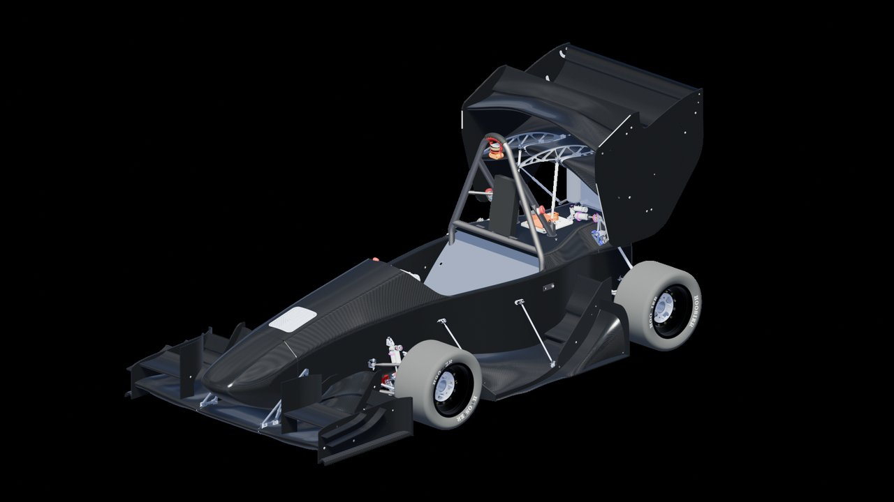
→
02
CR30 Battery Pack: Design and Manufacture
April 2026 · 7 min
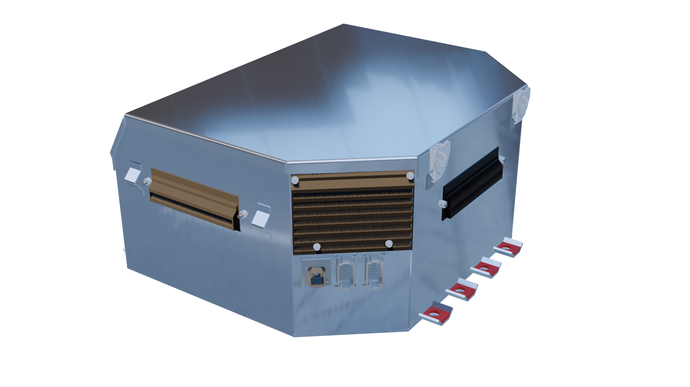
→
03
CR30 Battery Pack: Thermal Optimization
October 2025 · 5 min
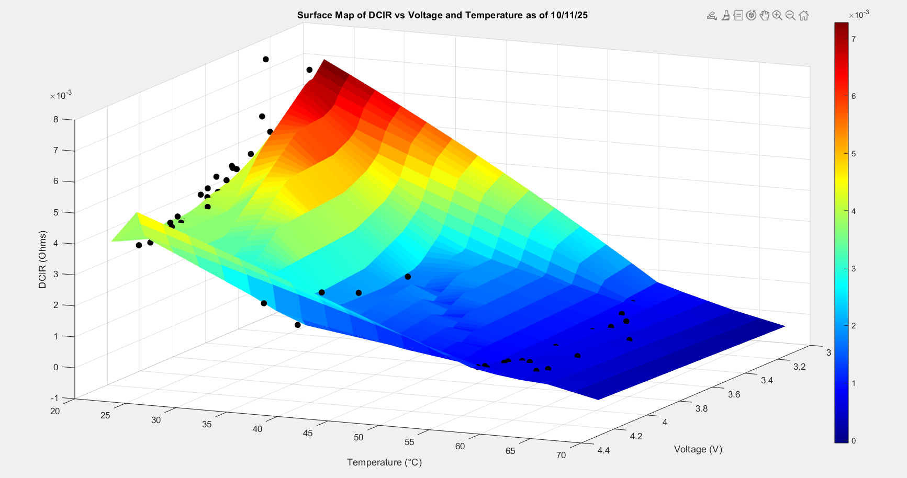
→
04
1976 Honda CB750F Restoration
Summer 2025 · 5 min
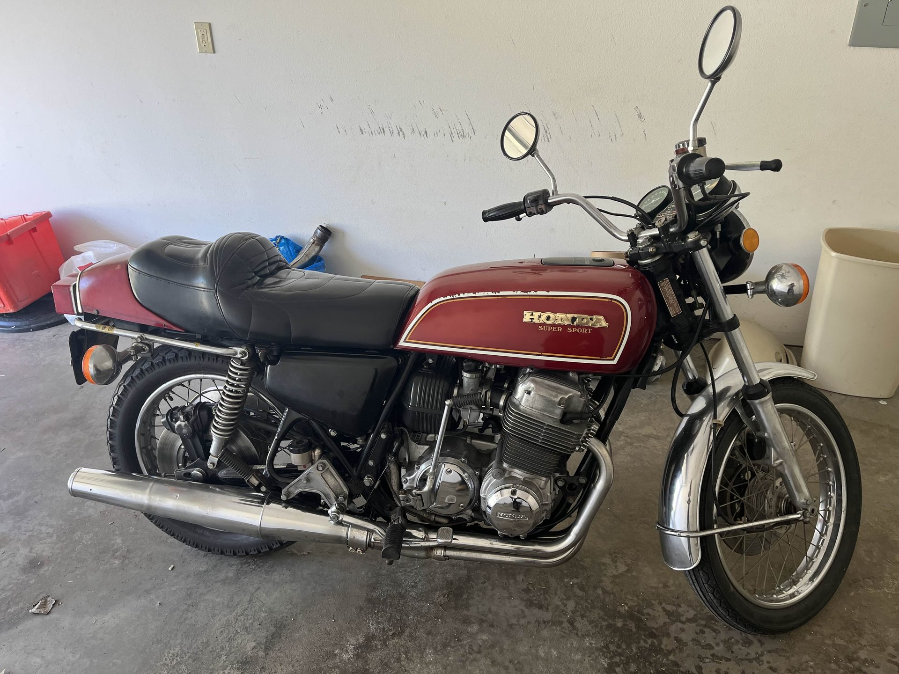
→
05
Dynamometer Cart + Motor Testing
April–June 2025 · 4 min
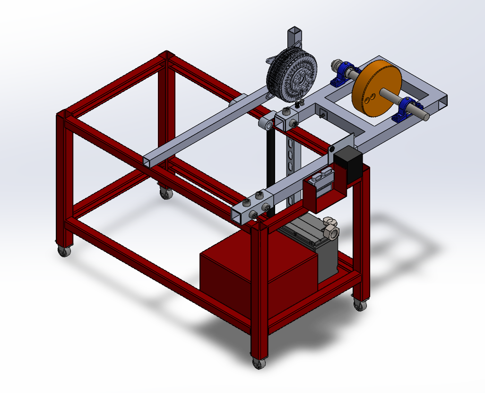
→
06
CR29 Battery Module: Manufacture
March 2025 · 6 min
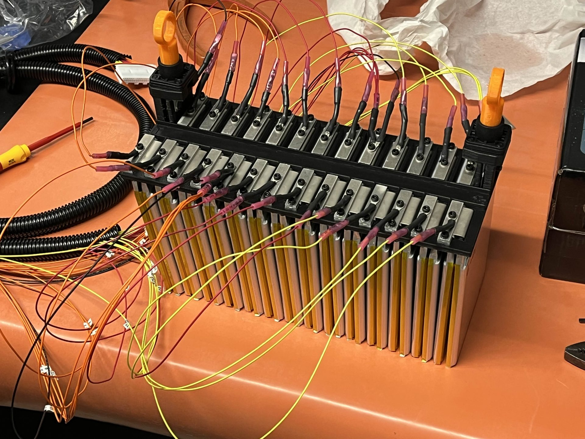
→
07
2 Week Tube Chassis
March–April 2025 · 4 min
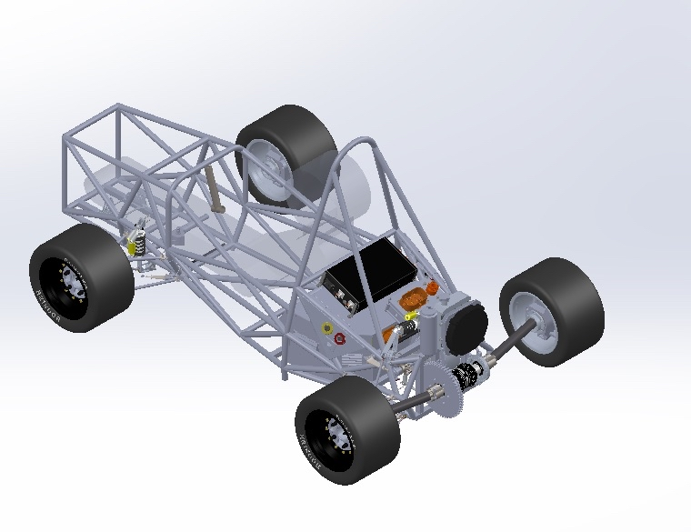
→
CR30 Powertrain: Troubleshooting Through Competition
May-June 2026·PowertrainInverterLead·~6 min read
The car with its battery and mechanical tech stickers at our first EV competition.
Powertrain lead on Cyclone Racing's CR30. The pack was already built, so this is what it took to make the car actually drive, from a blown inverter to our first EV competition.
Near the end of CR30's second driving day the motor put out a loud whine and the inverter blew an IGBT. I'd handed the motor setup to our motor engineer and hadn't checked it before we ran. The motor was never properly tuned, and putting real power through an untuned motor is almost certainly what killed the IGBT.
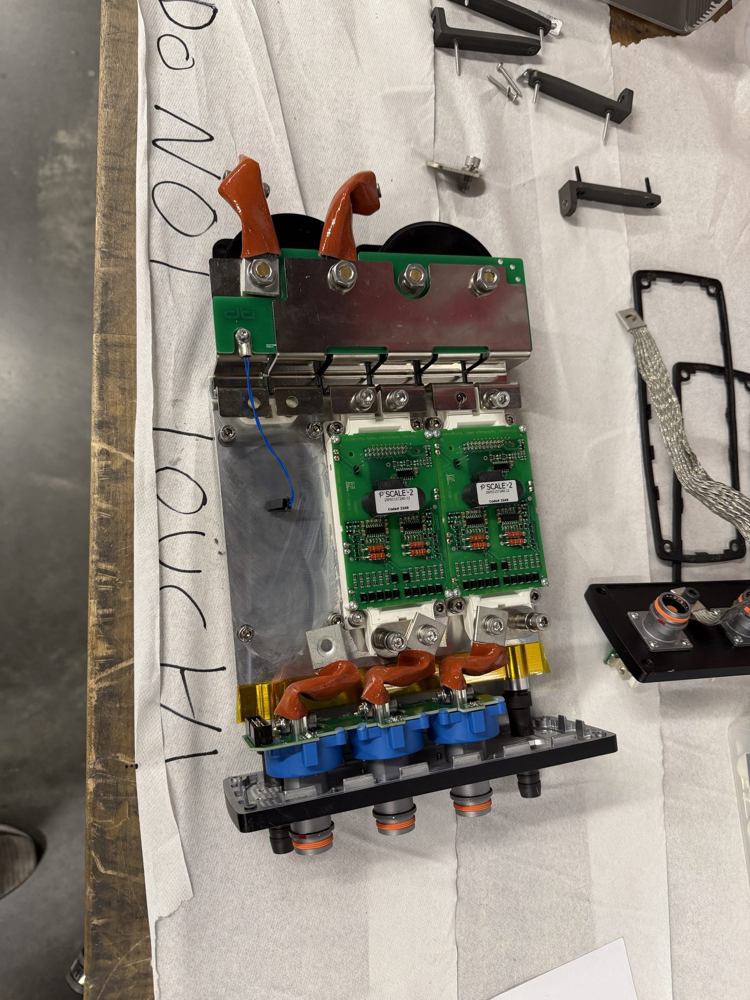
The inverter opened up to reach the power stage, and the failed IGBT with its burnt, cracked semiconductor.
A replacement was quoted at £1,400 with a four week lead time, and I didn't have four weeks before competition. So I opened the inverter and traced the failure myself. A diode test from the DC input to each phase terminal reads the voltage drop through each switch, and the failed one stood out immediately against the healthy ones. Checking its gate showed the gate driver had failed too.
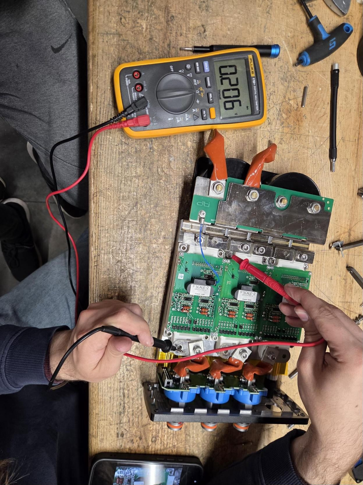
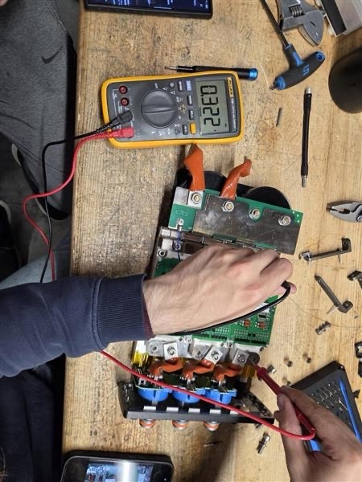
Diode testing the gate. The bad reading that flagged the failed device, next to a healthy one.
I found a matching IGBT and gate driver on Digikey, swapped both, and had the inverter running again for around $300 instead of £1,400. I never confirmed exactly what killed that IGBT, but running an untuned motor into it is the obvious cause.
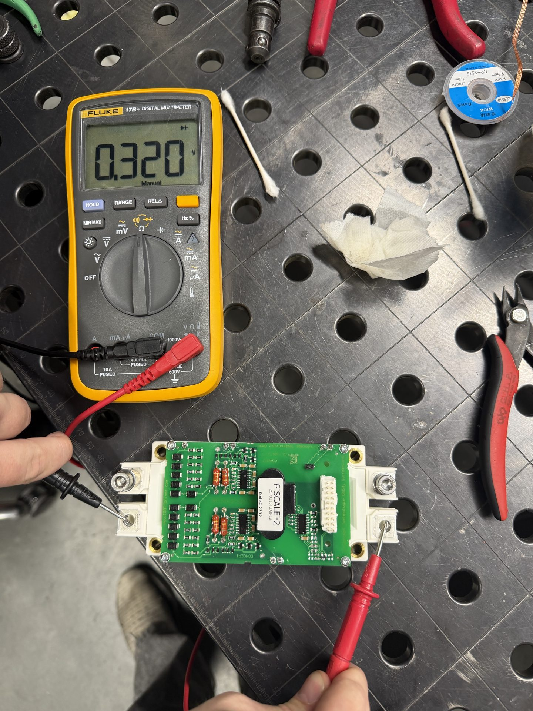
The replacement IGBT and gate driver, and the power stage confirmed healthy before it went back in.
The Power Cutout
With the inverter rebuilt, the car kept cutting power partway through a hard acceleration and wouldn't pull again until I brought it to a full stop. The HV system stayed live and the inverter didn't log a fault, so there was nothing obvious to troubleshoot.
At the same time the BMS kept throwing weak cell and open cell faults. I traced those to the pogo pins on the battery monitor boards losing contact with the cells under vibration, so I rebuilt the boards with hardwired connections and the faults stopped.
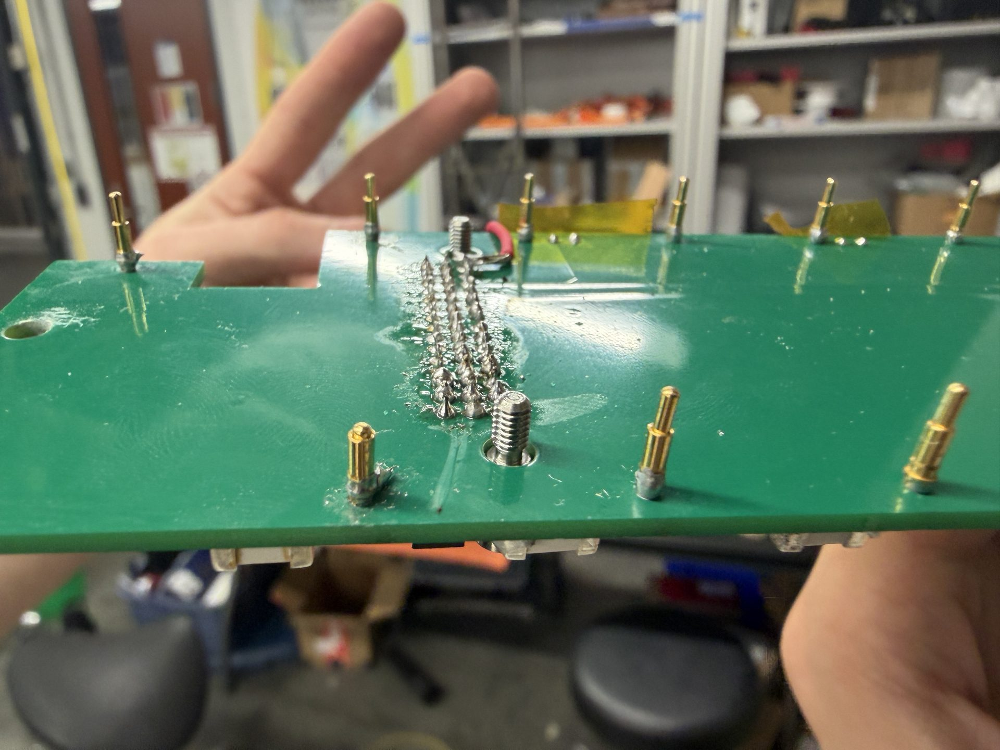
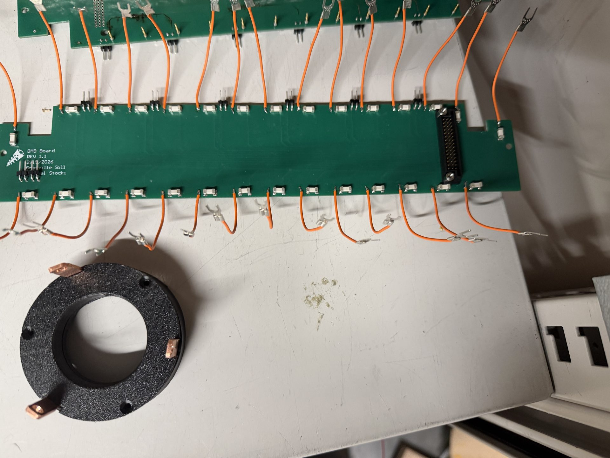
A pogo pin stuck from too much compression the design hadn't accounted for, and a monitor board rebuilt with hardwired fork terminals.
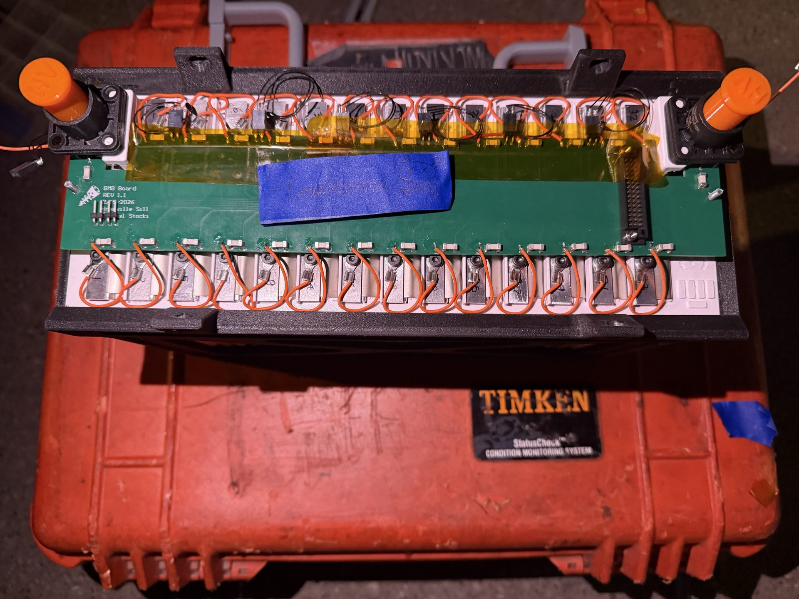
The first rebuilt board on a test day. No more faults on that module on its own, which confirmed the fix before I redid the rest.
I checked the likely causes of the cutout one at a time, going through the current and power limits, the switching frequency, the BMS, and supply sag, and none of them were causing it. The real problem was that I had no data coming off the inverter, so I couldn't see what it was doing in the moment it cut power.
Inverter Telemetry
The car had a dash logger that was supposed to record the inverter, but every inverter value in the logs sat at its default. I went through the logger firmware first and fixed it dropping samples and only reading one CAN message per loop. Even then, sniffing the bus showed no inverter data at all.
It turned out the inverter sends its detailed data on a second CAN bus, and the high wire for that bus had never been connected at the connector. Landing that one pin brought through everything I'd been missing, including the phase and DC currents, temperatures, faults, and whichever limit was active.
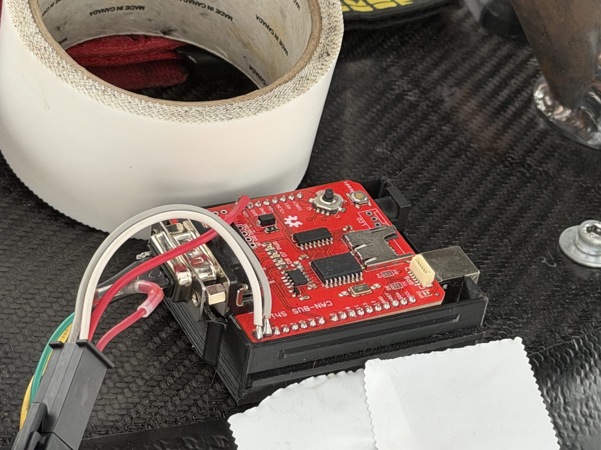
The CAN logger, taped to the side on Saturday and in a proper housing by Sunday.
After that the only problem left was the bus dropping out under hard pulls, which is the usual sign of switching noise getting into the wiring. The CAN pair was barely twisted and the HV cable shields had been left floating. I twisted the pair properly, grounded the shields, and added ferrite cores. From then on the inverter logged cleanly off a laptop riding in the car.
Root Cause: Flux Linkage
With real data on the bus, I could finally see the cutout happen. The inverter was hitting its input voltage limit even though the DC bus sat far above any voltage that should have tripped it. The cause was the flux linkage value in the inverter, set to about twice what the motor actually produces. The inverter uses that value to estimate the motor's back-EMF, so it thought the back-EMF was nearly up at the bus voltage and cut power to protect itself when it really had plenty of headroom left. The open loop tuning I'd done earlier should have caught a value that far off, but it had been run incorrectly, and that hid the problem.
I set the flux linkage to its measured value, grounded all the shields to a single point, and retuned the current loop from scratch. That retune was the first time the full procedure had been run properly, and it made clear the two axes needed fairly different gains. After those three changes the cutout was gone and the car pulled over 50 kW for the first time. They went in together, so I can't say for certain which one fixed it, but it hasn't come back since.
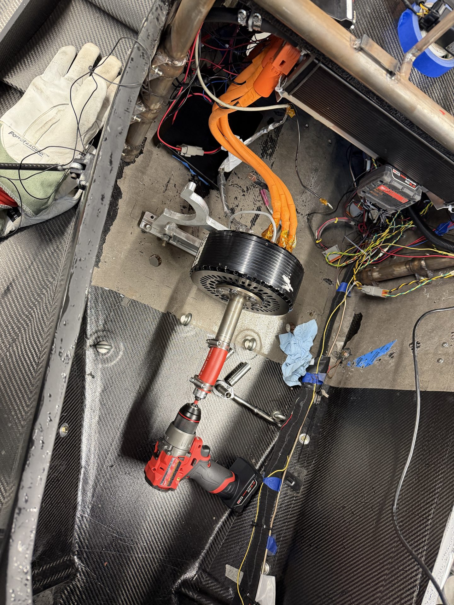
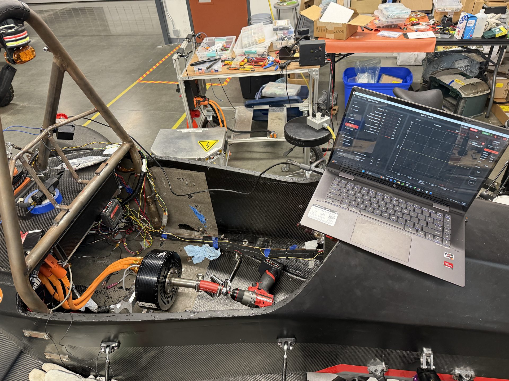
Measuring the motor's flux linkage, which came out about half the value the inverter had loaded.
Power
Even with the cutout gone the car was making less power than it should, and the DC current kept capping out well below the limit I'd set. That cap turned out to come from the AC current limit. I'd set it conservatively because I was treating the motor's datasheet peak current as a hard ceiling, and it isn't one. That number is a two minute thermal rating. An acceleration run lasts a few seconds, so there's a lot of room above it for short pulls. What sent me back to look was another team running the same motor at far more current than the datasheet peak.
Torque keeps climbing with current until the iron saturates, so raising the AC limit brought the DC cap and the power up together. On the wheel dyno the car made about 135 Nm at the wheels and into the high 50s of kW.
Race Prep
The last week before competition went to reliability instead of power. A loose interlock had been opening the shutdown loop under cornering load, killing the car every time it turned one direction, so I reworked the HV connectors to hold it solid. The DC-DC converter was still down, so I built and mounted a backup low voltage battery big enough to get through an endurance run. The rest of the week went to balancing the pack.
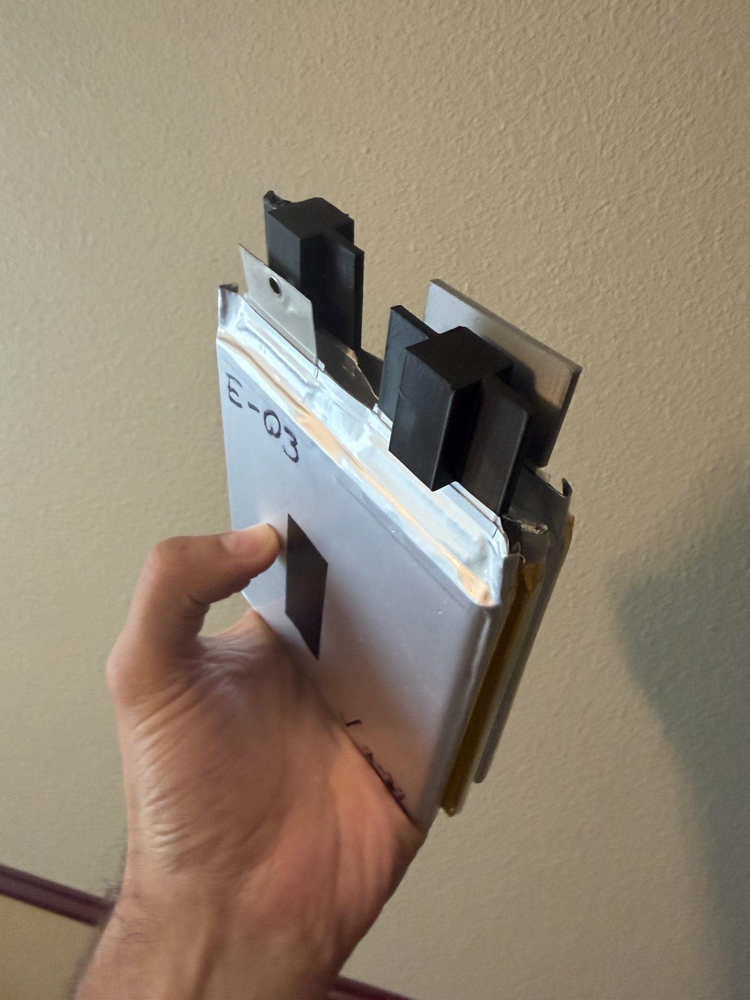
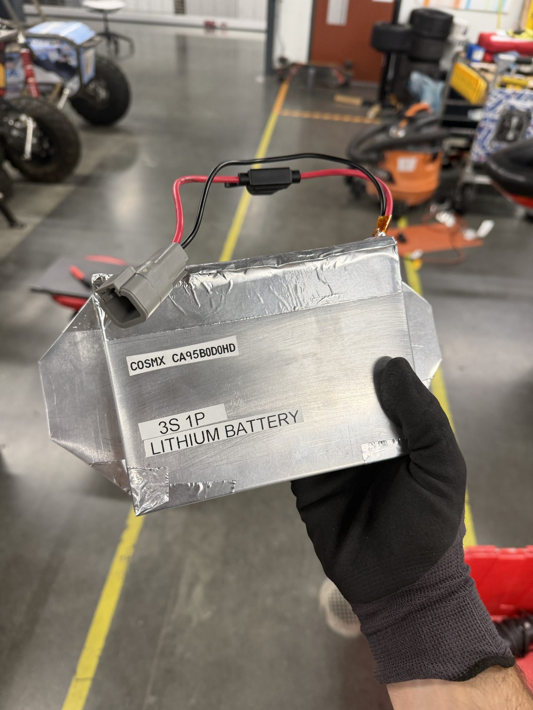
The backup low voltage battery, from the version two layout to the finished pack.
Competition
Our first EV competition ended up being almost entirely about tech inspection. We got through mechanical tech without much trouble, but the battery and electrical inspections were a different story, mostly around isolation rules we hadn't fully understood going in.
The biggest surprise came partway through, when the precharge board the electrical team had built turned out to be illegal, since by design it could short the tractive system to the battery through a gate. Our software engineer Aaron and I spent the night reusing that board to run precharge entirely over CAN with no analog signal. The only reason that was possible overnight was that the CAN work was already done on the car. The isolation checks then took several tries to pass. My best guess is the carbon filled filament in the pack was leaking a high resistance path, though I never confirmed it.
The last thing standing between us and the track was charging, and we never got past it. A discharge resistor we'd added recently overheated and melted its enclosure. We traced it to a fault inside the charging cart that held the discharge path closed and drained the whole pack through that one resistor. The officials sealed the charger and waived that section, but by the time we got to EV active tech there wasn't enough time left. We finished the event having passed battery and mechanical tech without ever reaching the dynamic events.
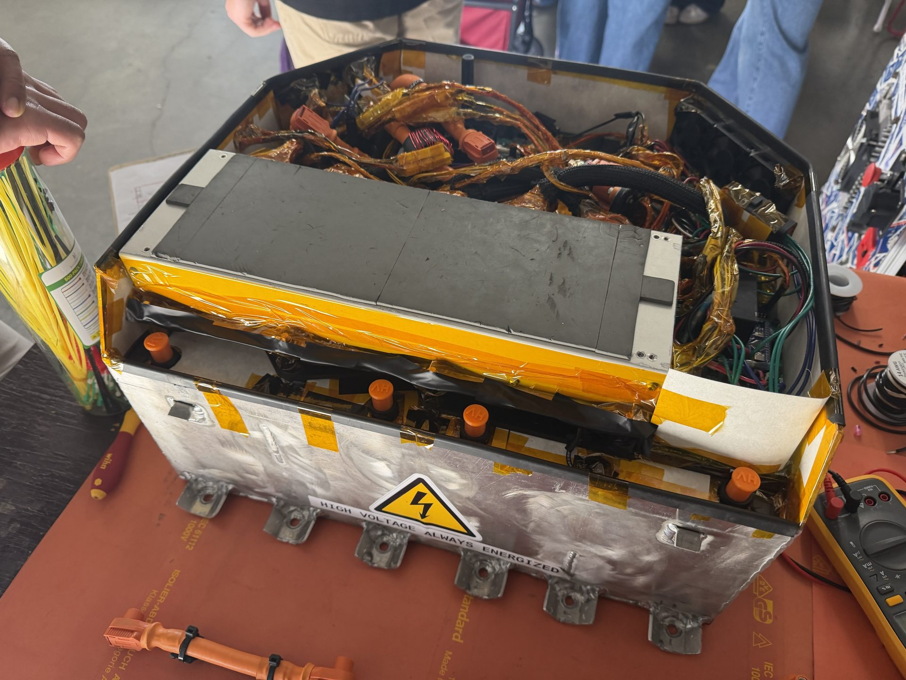
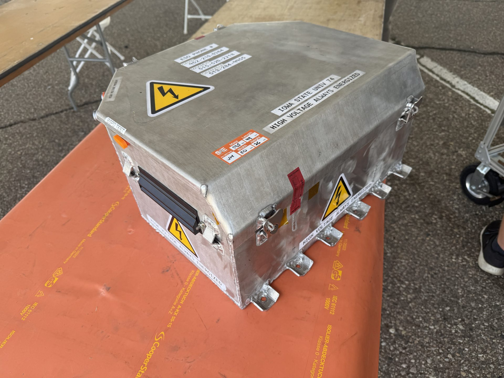
Insulation added at comp to clear the isolation rules, and the battery sealed up after passing battery tech.
Project Timeline
May 9
Blown Inverter
Late May
The Cutout
May 31
Inverter Telemetry
June 6
Root Cause Fixed
June 8
Power on the Dyno
June 16-20
Competition
Blew an IGBT near the end of CR30's second driving day, most likely from running an untuned motor. I traced it with a diode test and repaired the IGBT and gate driver myself for around $300 instead of waiting on a £1,400 replacement.
The car kept cutting power partway through a hard acceleration, with the HV up and no fault logged. The usual causes all checked out fine, but there was no inverter data to see what was actually happening.
The wire for the inverter's data bus had never been connected, so landing that pin brought the telemetry online. Twisting the CAN pair and grounding the floating shields then stopped the noise dropouts.
The flux linkage was set to about twice the motor's real value, so the inverter thought it was running out of voltage and cut power. Fixing the value, grounding the shields to one point, and retuning cleared it, and the car pulled over 50 kW for the first time.
The DC current was capped by an AC limit I'd set too low, since I'd read the datasheet's thermal peak as a hard ceiling. Raising it gave about 135 Nm at the wheels and into the high 50s of kW on the dyno.
Passed battery and mechanical tech. An illegal precharge board meant rebuilding precharge over CAN overnight, and a charger fault melted a discharge resistor, so we ran out of time before the dynamic events.
CR30 Battery Pack: Design and Manufacture
April 2026·DesignManufactureLead·~7 min read
The CR30 pack. Second iteration, first one to drive.
How Cyclone Racing's CR30 battery pack was built, what went wrong, and what changes for CR31.
Specifications
Configuration: 28s per module, 5 modules in series
Cells: COSMX CA95B0D0HD (carried from CR29)
Pack voltage: 600 V fully charged
Mass: ~140 lbs
Context
CR30 is Cyclone Racing's first complete electric car and the first to drive under its own power. Prior to this, there was only the CR29 research car that was never finished, and its pack was only built as a proof of concept. This post covers how the CR30 pack was built. The pack is 140 cells in series, which is near 600 V fully charged. The cells are split into five modules of 28, and the modules sit in a welded aluminum housing that bolts into the chassis.
I was powertrain lead and built the pack. That included the modules, the housing, the high voltage wiring, the chassis mounts, and getting the battery management boards working. The design was shared. My design work was the tabs and slots on the housing, the way the tab blocks are held down, and the retention stack that holds the battery management boards flat.
Each module sits in a basket, a 3D printed shell that holds the 28 cells, insulates them from the aluminum housing, and keeps them from moving. CR29's baskets were polycarbonate. CR30's are PAHT-CF, a carbon fiber filled nylon that was chosen after impact tests against other filaments. Granville designed the basket and filled out its SES, the structural spreadsheet FSAE requires, but struggled to complete it. I took over to finalize the SES and then manufacture the basket.
PAHT-CF warps when it is printed in a part this large, and since our team doesn't have direct access to 3D printers, it took a month to get a basket I could use. The basket was too big for the beds on my Bambu A1 and another powertrain member's X1 Carbon. After digging around, I used a suspension team member's Voron, which was large enough and had an enclosed chamber but didn't have a chamber heater. On the initial prints the corners lifted off the bed and the part came out short in Z. I printed baskets on the Voron with different print patterns, bed temperatures, and speeds, and every one warped too much to use.
I then borrowed a Bambu H2D, which has a heated chamber, and the baskets warped much less. The parts still shrank, so I scaled the model to make up for it. It took three test prints to tune the scaling, and the final model was 1.25% larger in Z.
Even so, the print quality wasn't perfect and every basket came off the printer with burrs. A burr pressed into a pouch cell can puncture it, so I had to sand all five baskets by hand before assembly.
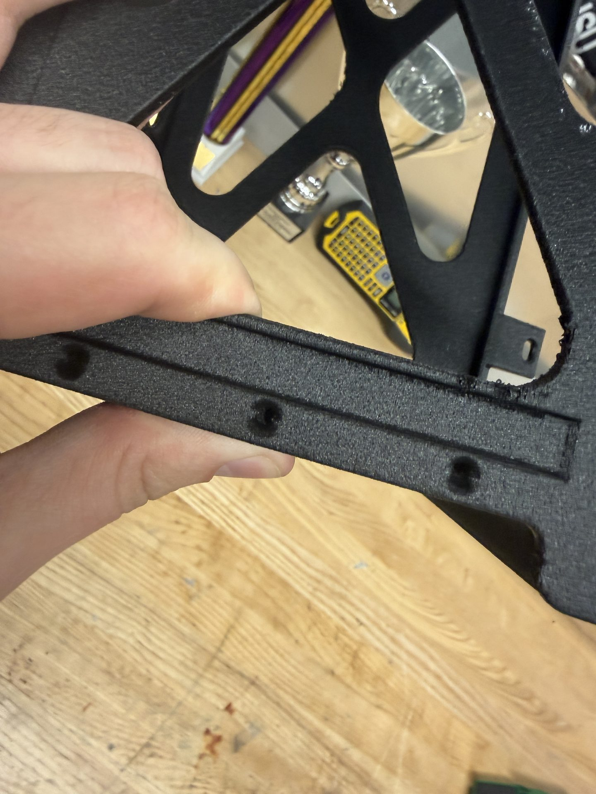
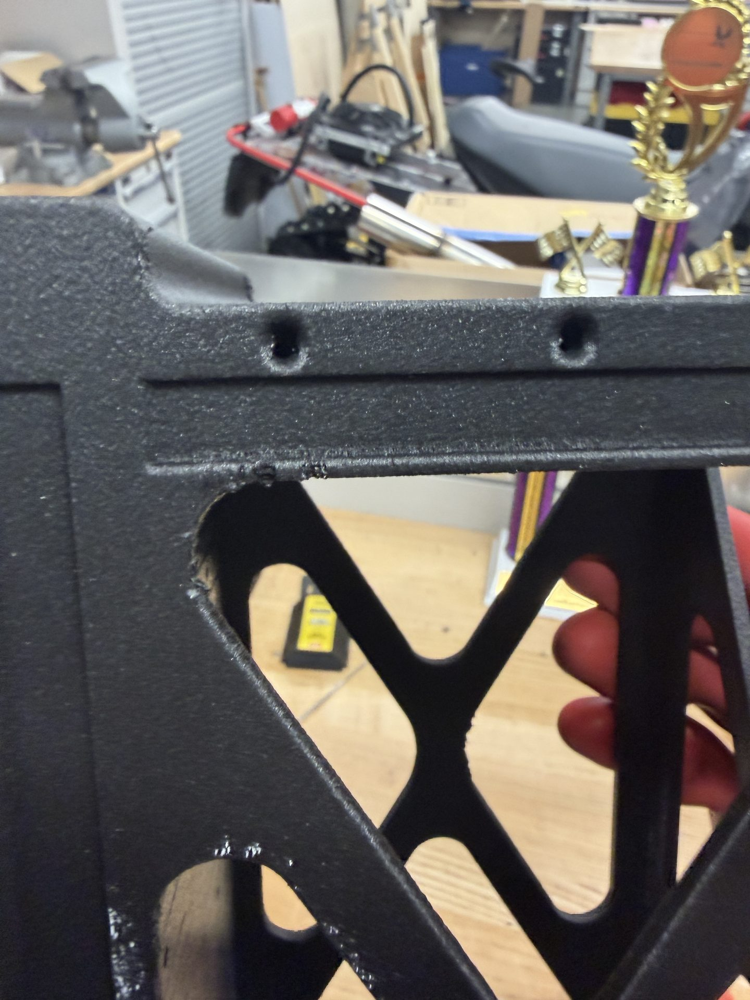
Burrs on a basket straight off the H2D. Every basket had them before sanding.
One side of the basket is open. A plate bolts over that side and holds the cells against the opposite wall. The CAD had about 1 mm of clearance between the plate and the cells. The printed parts had none, and I never found out whether the baskets came out small or the way the cells interfaced with one another caused them to be thicker than modeled. Because of this issue, it takes two people to close a basket, and the plate presses firmly on the cells, sort of like an interference fit. I had already tested cell resistance against pressure for the thermal post and pressure had almost no effect, so the tight fit shouldn't change how the cells perform and was acceptable.
Tab Plates and Tab Blocks
The tab plate holds the cells in each module as well as their electrical connections. Each cell's tabs pass through slots in the plate and fold over between two aluminum tab blocks. Bolting the blocks together clamps the tabs. The plate is a PETG print, and it also holds the module's two terminals, which are Amphenol posts. The bulk of the design came from my mentor Gavin, who used a similar concept on the CR29 module design.
The tab blocks are aluminum because the clamp has to be light and stiff, and aluminum also carries heat away from the tabs.
On CR29 every tab block had a bolt at each end. For CR30 Granville and I wanted one bolt per block, which halves the fastener count. Granville first proposed one plastic cover that clamped down over all the blocks. The rules don't allow plastic in a clamped electrical joint, so that wasn't selected. His second idea was a small plastic key/finger over each block, but the keys had stress concentrations and I didn't trust them to last. I suggested adding a small overhang to the plate. One end of each block sits under the overhang and the other end takes a single bolt, cantilevering the block to provide force along the whole length. That removed half the bolts without much effect on cooling.
The bolts thread into aluminum nuts that sit in pockets in the plate. On CR29 the pockets were loose, so a nut could shift as its bolt tightened and get rounded off. For CR30 I made the pockets an interference fit. I printed test pockets at several sizes, and 0.05 mm of interference let a nut press in without damaging the PETG. The nuts we bought for CR30 had rounder corners than CR29's, and tightening the bolts with a tool still deformed the pockets. I got every joint tight but couldn't go tighter without damaging the pockets more. The resistance of those joints was never measured, but it seemed reasonably low in testing.
The initial plan for CR31 is to weld the cell tabs together, ultrasonically or with a laser. That removes the tab blocks, the nuts, and the bolts.
BMBs
Each module has a battery management board, or BMB, that measures the voltage of every cell. The BMB touches each tab block through a pogo pin, which is a spring-loaded contact. Granville designed the board and the pogo pin layout. I ordered bare boards from JLC, assembled seven of them, and tested them on the modules.
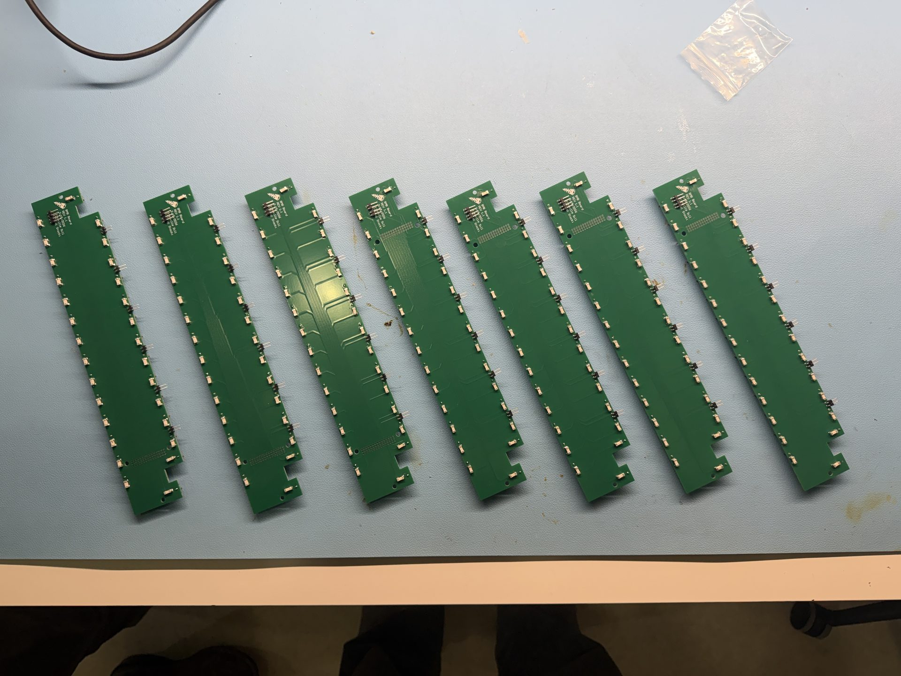
Seven BMBs assembled from bare boards. Five went on the modules and two were spares.
The largest problem was that the boards bent. In Granville's design, a BMB is fastened at both ends and unsupported in the middle, and the pogo pin springs push the board away from the tab blocks. The middle of the board bowed, the center pins lost contact, and the BMS lost those cell readings.
The module already had a retention rod that holds the baskets in place, fed through a printed plastic insulator. I redesigned the insulator as a stiffener that presses down across the middle of the board so the center pins make contact.
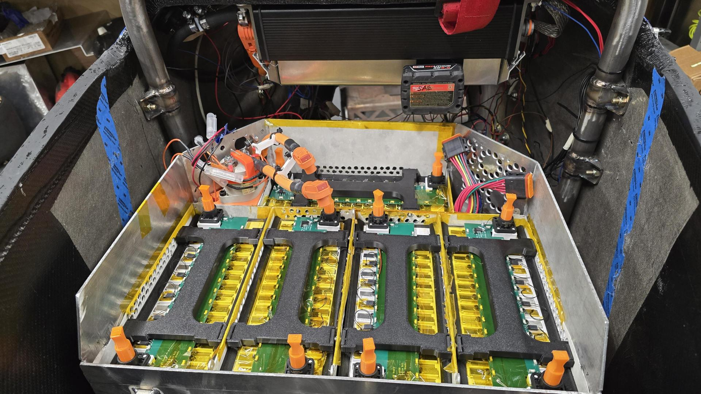
The redesigned insulator.
This fix initially seemed to work, but later the pogo pins began sticking in the compressed position and had to be replaced with wires and fork terminals. That repair is in CR30 Powertrain: Troubleshooting Through Competition.
Four smaller problems also cost time:
Harness termination: The harness gave cell 12, cell 13 negative, and cell 13 their own terminations. In a series string the positive of cell 12 and the negative of cell 13 are the same point, so those two wires have to share one termination. The BMS reported ten cells missing until I made version two of the BMBs and rewired the harness.
Missing trace: The production boards were missing one trace, so every board had a jumper wire in its place. That was fixed when version two arrived.
Thermistor traces: The thermistor traces share a plane, so a wire end touching a cell during installation can burn a trace. That happened twice. After that I covered the pins with Kapton tape while mounting a board and removed the tape once the board was secured. I moved the components from the damaged board onto a spare.
Connector: The sense connector doesn't tolerate misalignment. Plugging it in slightly off arcs the pins and blows fuses. That can't be fixed on this board revision.
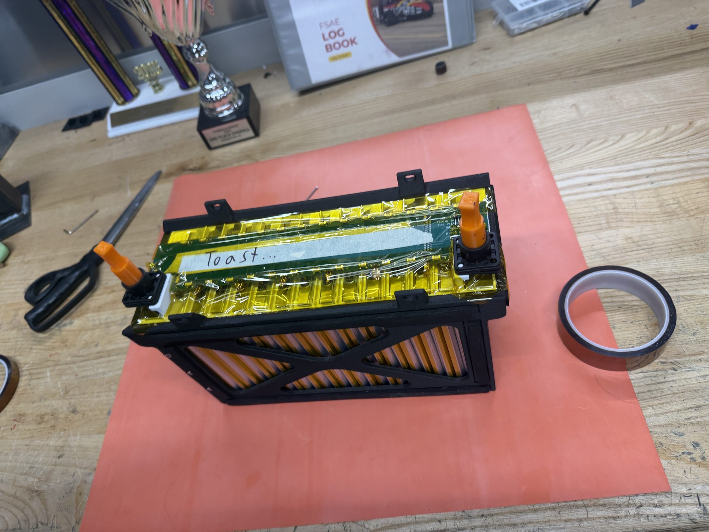
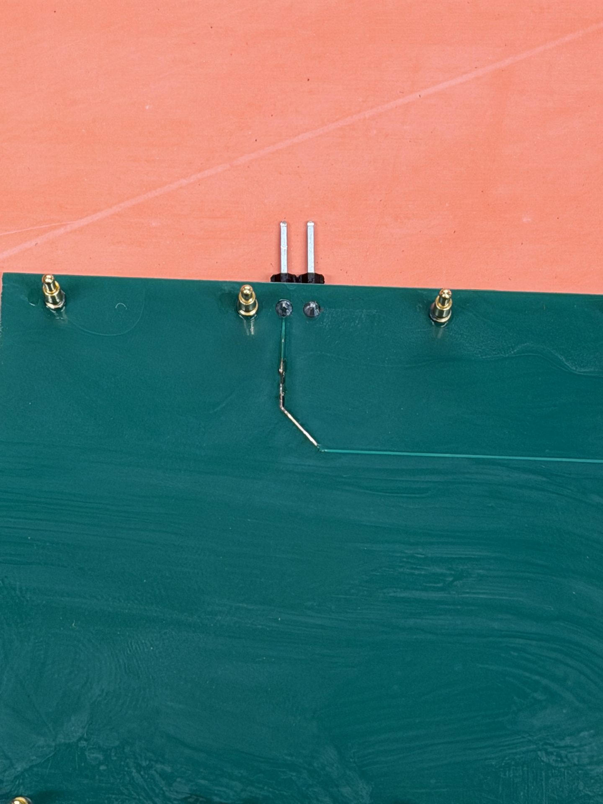
A finished module with its BMB installed (left), and the burned thermistor trace on the board after it was removed (right).
The boards were meant to make the sense wiring cleaner than CR29's, which was terminated by hand. They worked after these repairs. I later found the boards were illegal, because the low voltage and tractive system wiring terminate into one connector. That didn't stop us from passing that section at comp, but redesigning them is required for CR31.
Module Lifting Tool
The baskets had no feature for lifting a module out of the housing, and I didn't notice until I had to remove one for service. I designed a lifting tool in about twenty minutes. It attaches through the same holes the vertical retention rods use.
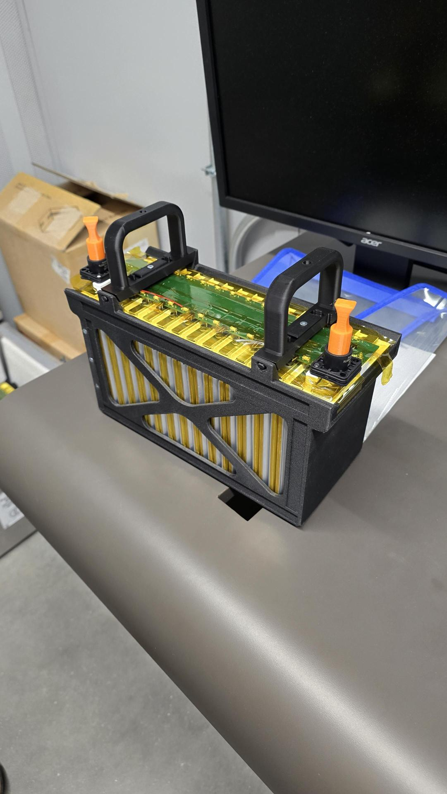
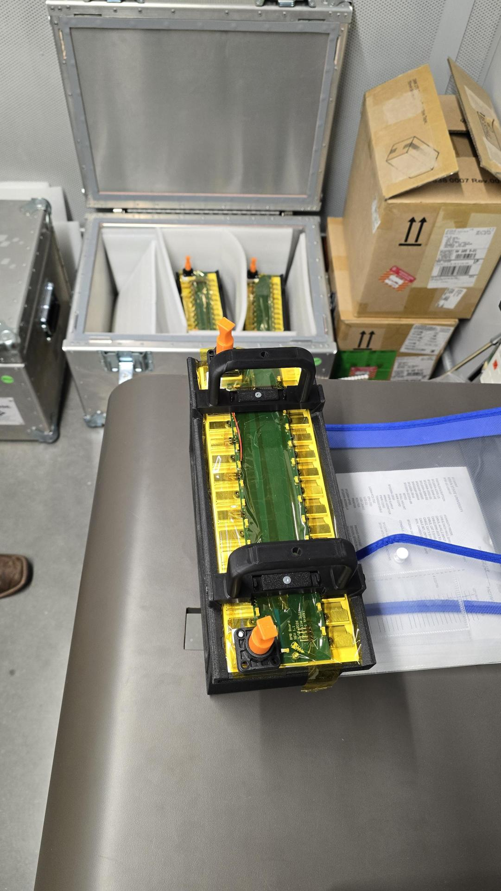
The lifting tool. It attaches through the same holes as the retention rod.
The Aluminum Housing
The housing is a welded aluminum box that holds the five modules, the BMS, and the high voltage wiring. The panels are cut on a waterjet and welded together.
On CR29 the panel edges were flat. Every seam had to be clamped, and we had to pray the panels were square before welding. Even then the walls warped. For CR30 I added tabs along the edges of the outer walls and matching slots in the inner walls. Each tab drops into its slot, so the panels hold themselves in position and need no clamps. That worked on every seam that had tabs and slots. Fitting and welding the housing took over three weeks on CR29 and two days on CR30.
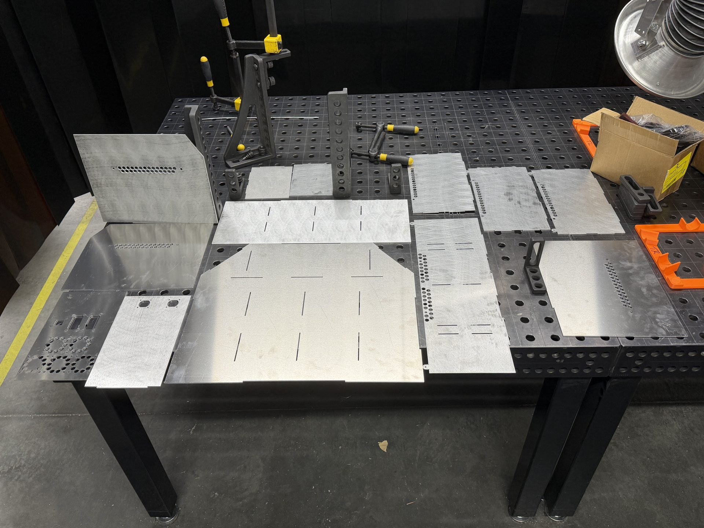
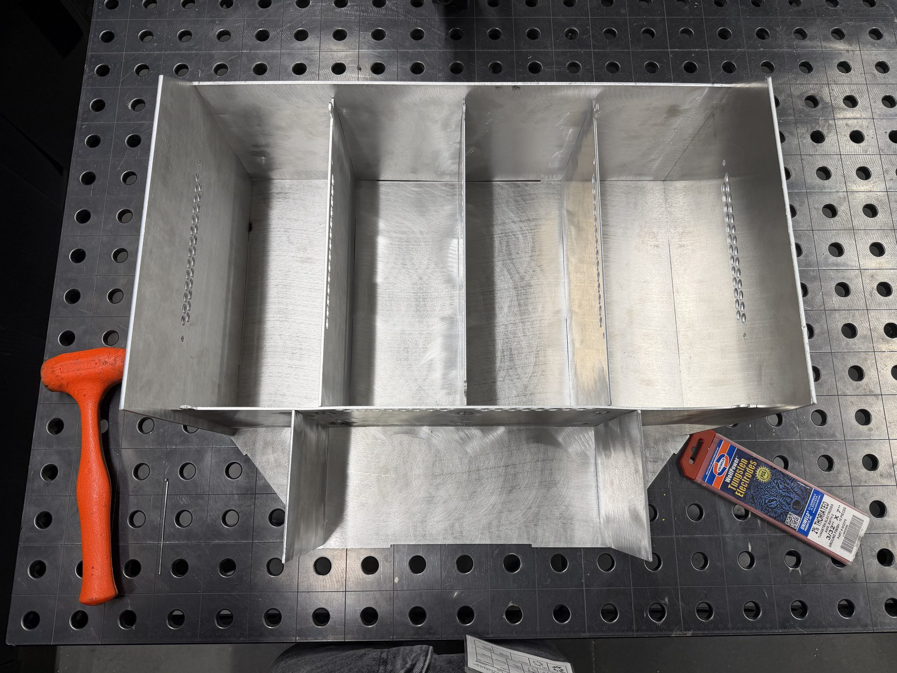
The waterjet panels with their tabs and slots (left), and the same panels fitted together with no clamps (right).
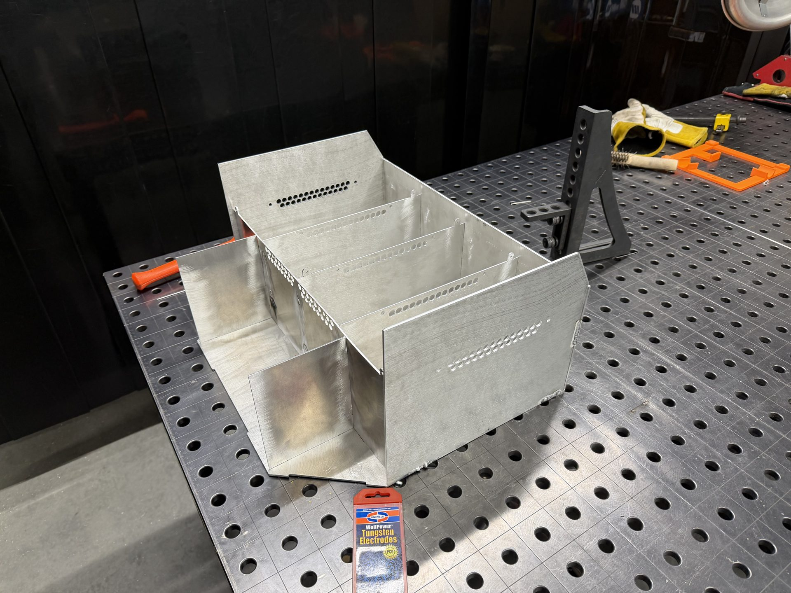
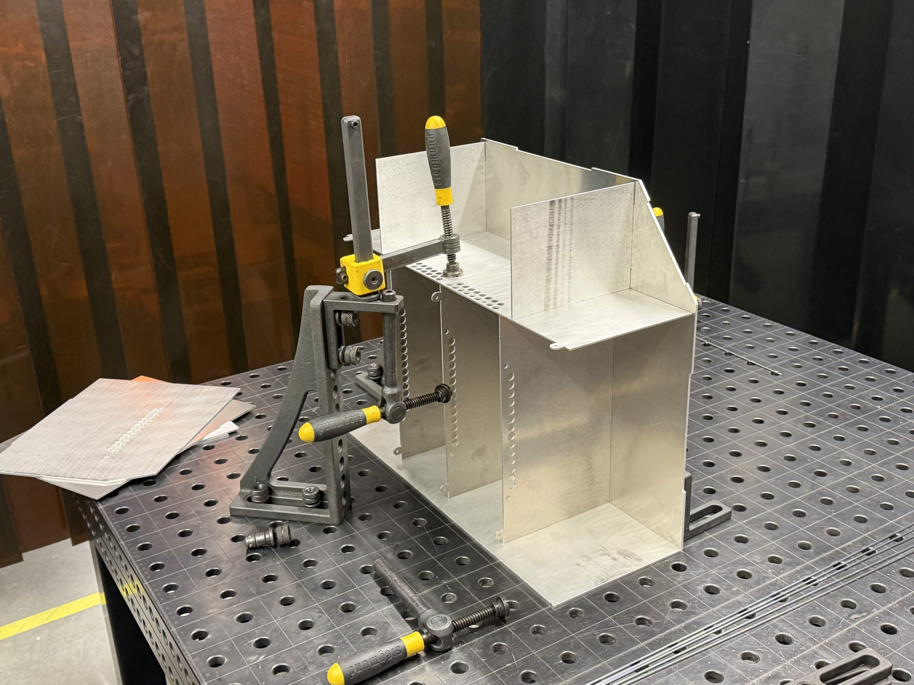
The fitted housing from another angle (left), and the panels held square for tack welds (right).
I didn't add tabs and slots at the corners. After welding, one corner was bent inward. That corner is where the high voltage components go, and the bend took away enough space that the planned layout no longer fit.
HV Distribution
CR29 brought high voltage out of the pack through one large Amphenol connector in a corner and used Coroflex cable to connect the modules to each other. CR30 started with the same layout. Partway through the design, a senior team member proposed a printed sleeve in that corner, called the Power Prism, to hold the contactors, the main fuse, and copper busbars. The sleeve packs those parts closer together and shortens the high voltage cable runs.
The sleeve only fit because the busbars could be made smaller. We had been sizing conductors from ampacity tables, and those sizes are larger than this pack needs because it only sees peak current for a few seconds at a time. Recalculating from the conductor's resistance and the heat it produces over an endurance run gave much smaller cross sections.
When the housing corner bent inward, the original sleeve no longer fit. I worked with newer team members to redesign it for the smaller space.
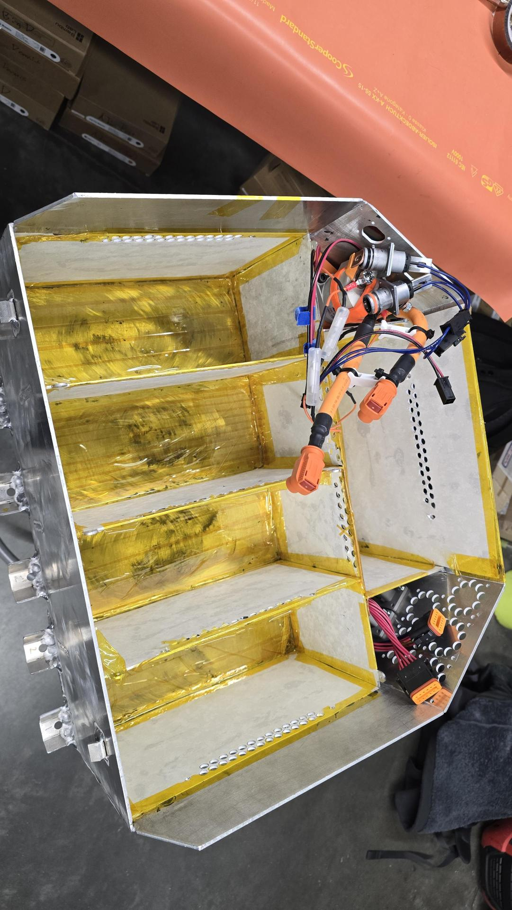
The Power Prism in the corner of the pack. It holds the contactors, the main fuse, and the busbars.
The main contactors currently connect to points near the center of the pack. The module terminals beside the corner are electrically the same points. Connecting there on CR31 would replace most of the cable with busbars, free up the center of the pack, make it harder to plug a connector into the wrong place, and save a little weight.
Chassis Mounts
The pack bolts to the chassis at ten mounts, four at the rear and six at the front. Each mount bolts into an insert that was laid into the carbon fiber monocoque before it was cured.
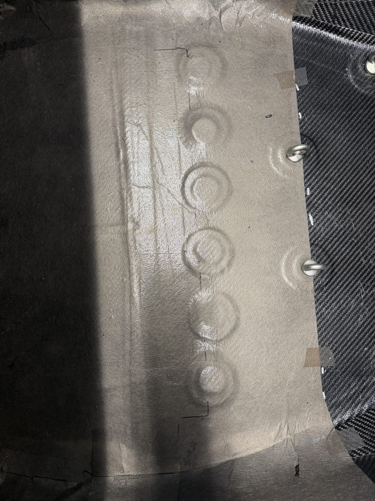
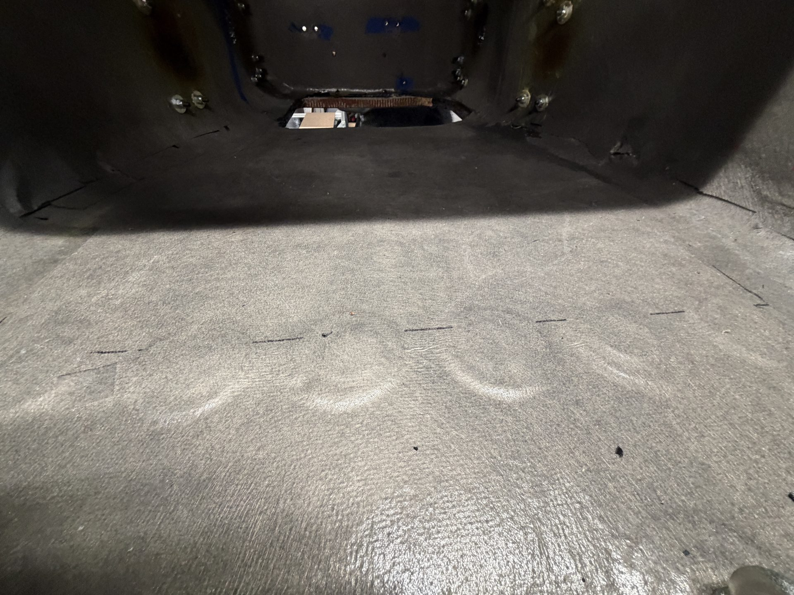
The inserts laid into the monocoque before cure, from two angles.
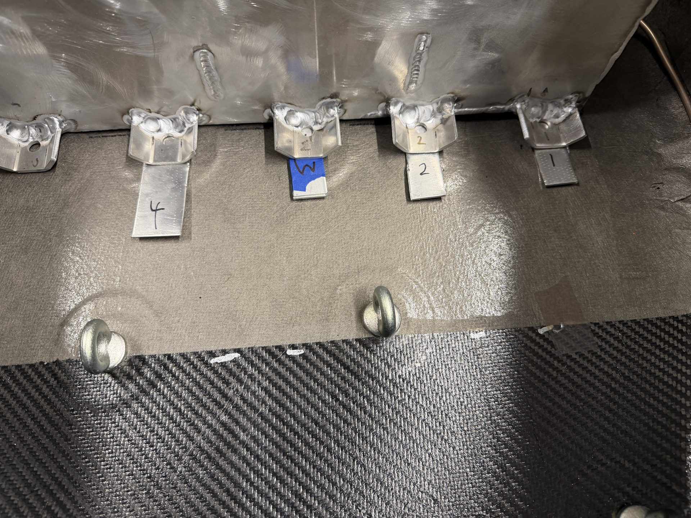
Numbered shims under the pack's mount tabs, used to measure the gap at each mount.
The four rear inserts came out flush with the surface and those mounts bolted on. The six front inserts stuck out above the surface, so the front mounts sat higher than the mounting points on the pack. The pack was already in position and couldn't move. I lowered each front mount until it sat flush with the pack, which left a gap between the mount and the chassis.
The gap was a problem for the SES. The SES requires at least ten mounts for our geometry, and a mount with a gap under it carries more load, so the front mounts failed the strength check. I made an aluminum spacer for each gap. The spacers were machined, welded to the bottom of each mount, and ground flush. The pack, sitting in the chassis, was then used as a jig to drill the bolt holes so they lined up. With the spacers entered in the SES, the mounts passed.
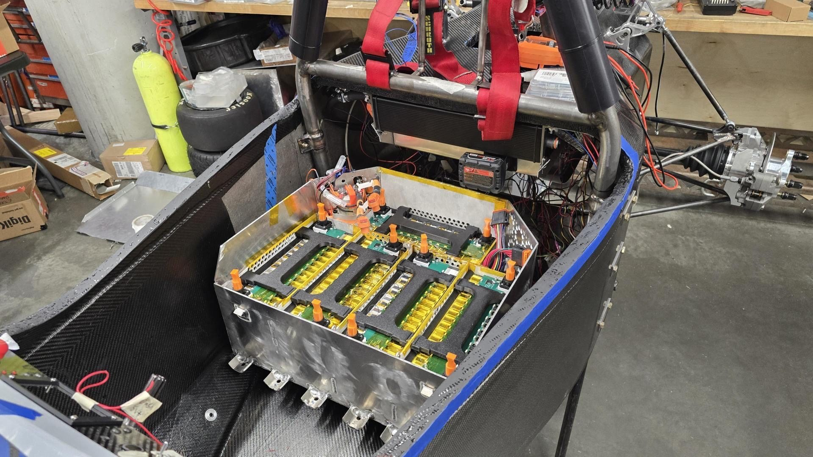
The pack in the chassis for the first time, after the spacers were fitted.
CR31 will bond the inserts in after the chassis is cured. Bonded inserts come out flush and flat, so the mounts sit where they were designed to.
First Drive
The first drive was planned for March 1 and happened on April 26. Most of the delay came from the electrical boards outside the pack, which are the SSI, precharge, shutdown, and HVI boards. They went through about six revisions before they passed bench tests, and some revisions that passed on the bench failed on the car. One couldn't carry the full shutdown loop. Another used relays with too much coil resistance, which dropped the voltage below what the contactors need to close. The wiring harness couldn't be finished until the boards were final, so every revision pushed the schedule back.
The pack had one incident in that time. During work inside the pack an allen key touched exposed pins on a BMB connector. The pins arced and blew eight cell fuses on the board. I removed the board and replaced the fuses.
The night before the drive, with the car on a stand, the wheels spun backward. I worked on it until 1 a.m. thinking the polarity was wrong. At 7 a.m. another team member found a setting in the inverter that reverses motor direction. Unchecking that setting fixed it...
The wheels spinning backward the night before the first drive.The first drive.
The first time the contactors closed, the Orion BMS reported an open charging relay. The car has no charging relay... I had apparently left a setting enabled that told the BMS to expect one, and turning the setting off cleared the fault.
Next the inverter cut power because the two accelerator pedal sensors disagreed by more than 20%. We tested each sensor alone to find out whether the difference was real or came from the two channels updating at different rates. We didn't find the cause, but we increased the disagreement threshold to 80%.
The inverter also kept faulting for reasons we couldn't trace. The main board from the electrical team wasn't ready, so we had no logged data to read the faults from. We shortened the fault reset time from 5 s to 1 s so the car would recover quickly and keep driving. That was a workaround and not a fix.
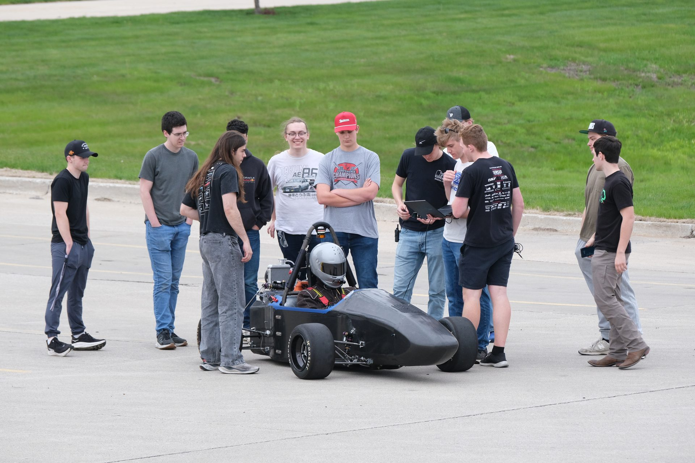
Working on the inverter faults during the first test day.The last acceleration of the day, just before the low voltage fault.
With the workaround the car ran laps for most of the day at a 40 kW limit, and the pack had no faults of its own. The day ended when one cell reached the low voltage limit. During module assembly we had dropped a cell and replaced it without checking the replacement's state of charge. That cell fell from 3.46 V to 3.296 V over the day while the rest stayed near 3.56 V.
It started to rain as we packed up. Not every grommet on the car was sealed yet, so we would have had to stop anyway.
Notes for CR31
The changes planned for the next pack:
Weld the cell tabs. That removes the tab blocks, the nuts, and the bolts.
Tabs and slots on every housing seam, including the corners.
Bond the chassis inserts after cure so they sit flush and need no spacers.
Redesign the BMB with a sturdier sense connector, the correct harness termination, the missing trace, and isolated thermistor traces.
Connect high voltage at the corner modules with short busbars.
Consider a composite housing. Aluminum is heavy for this job, and a materials analysis is pending.
Use Melasta pouch cells if the budget allows. They are 11.5 Ah cells instead of 13 Ah, so the pack would be smaller and lighter.
Match the state of charge of any replacement cell before installing it. One mismatched cell ended CR30's first drive early.
Prototype more. About 70% of CR30's parts had small problems that one test print or foam mockup would have caught.
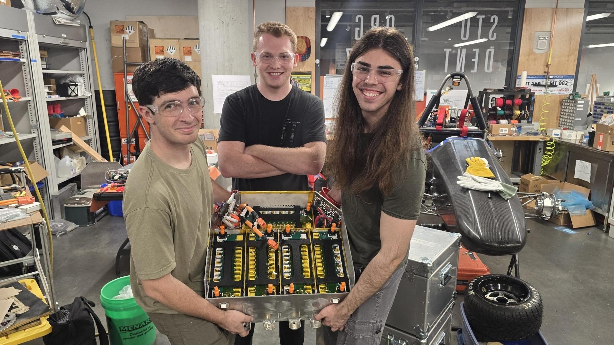
The finished CR30 pack and the people who designed it. Granville (left), Gavin (middle), me (right).
Project Timeline
September 2025
Milestone 1: Design Phase
November 2025
Milestone 2: Manufacturing Begins
February 2026
Milestone 3: Modules and Housing Complete
March 2026
Milestone 4: Testing on the Car Begins
April 2026
Milestone 5: First Drive
We settled the design changes from CR29's pack: a PAHT-CF module basket, cantilevered tab blocks with one bolt each, and tabs and slots on the aluminum housing. The design phase closed November 1.
Manufacturing started. I took over the full pack build: the modules, the aluminum housing, the high voltage wiring, and the chassis mounts.
The five modules and the welded housing were finished. The corners had no tabs and slots, and one corner bent inward during welding, so the high voltage sleeve had to be redesigned for the smaller space.
The pack was in the car and testing started. The first drive was planned for March 1, but revisions to the electrical boards and debugging on the car pushed it back.
The first drive was April 26. The car ran at a 40 kW limit and the pack had no faults of its own. The day ended when one replacement cell, installed at a lower charge than the rest, reached the low voltage limit.
CR30 Battery Pack: Thermal Optimization for Endurance
October 2025·ResearchDesignTestingLead·~5 min read
CR30 battery pack render.
How DCIR testing on Cyclone Racing's CR30 cells replaced a liquid cooling system with ten fans, and why the spec sheet was useless.
The Problem with the Spec Sheet
The CR30 battery is a 5-module lithium-ion pack that needs to sustain current bursts up to 200A through FSAE endurance events. Heat rejection is critical, but when I went to calculate how much cooling the pack needed, I ran into a wall.
The cell spec sheet listed DCIR as either 1.5 mΩ or 5 mΩ. Two values with no graph, no conditions, no context. Depending on which you used, the thermal math either showed the pack overheating by end of endurance or barely needing cooling at all. Assuming worst case, I started designing a liquid cooling system: U-shaped shims contacting cell faces, a cooling plate, thermal padding, quick disconnects, and a pump loop mounted to the pack.
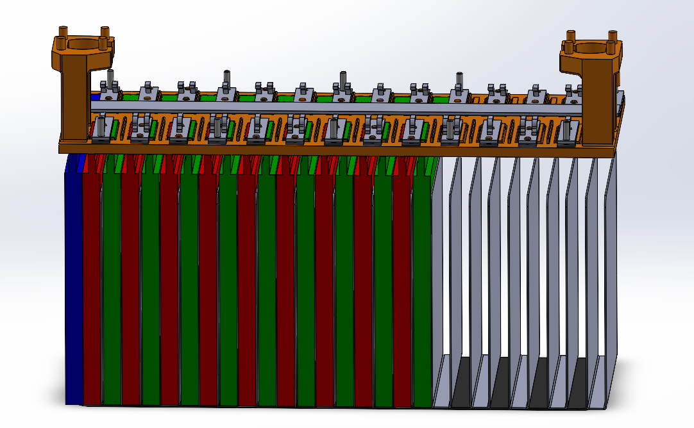
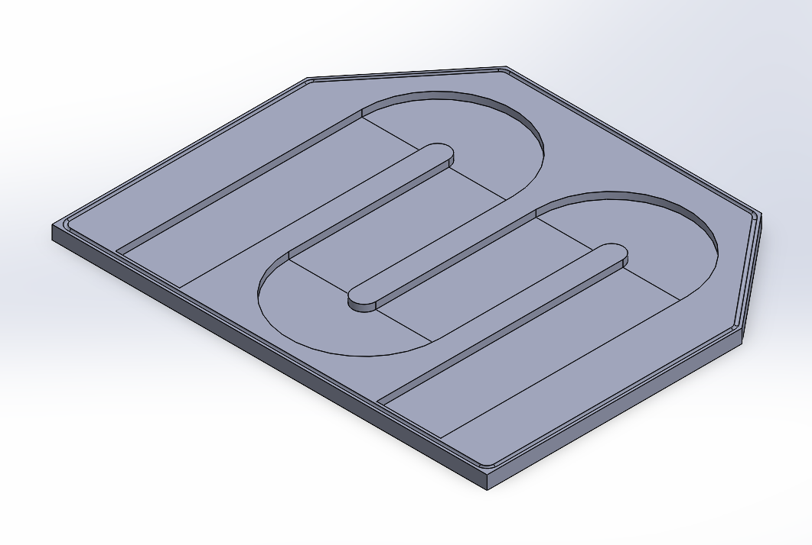
The abandoned liquid cooling design: U-shaped shims contacting the cell faces (left) and the dedicated cooling plate (right).
The more I looked at it, the worse it felt. The design added weight and complexity, cooling effectiveness would be marginal, and reliability of a fluid loop on a racecar was a real concern. I was building a solution to a problem I hadn't confirmed existed. What I needed was to characterize the cells under real conditions instead of trusting a spec sheet not written for racing.
Building the Test Rig
I identified four variables that affect DCIR: stack pressure, temperature, C-rate, and state-of-charge. The goal was to isolate each one and understand how much it mattered, all for under $100.
Load Bank: Four 0.1 Ω heatsink resistors in a 2s2p configuration for uniform heating, validated at 0.131 Ω via 4-wire Kelvin sensing
C-Rate Tester: Carbon pile rheostat for variable current draw
Pressure Fixture: Machined steel plates with springs, adjustable from 0–8 psi
Current Sensing: Borrowed SSA-250 and current clamp from the PRISM Solar Car team
Not glamorous, but it covered the parameters I needed to test.
Testing Each Variable
Face Pressure: Ruled Out
Stack pressure was first. Using the spring fixture, I ran pulse tests at 0, 2, 5, and 8 psi across cell faces. DCIR barely moved. The car sees a low cycle count over its lifetime, so pressure-driven SOH degradation isn't a design concern. I deprioritized it and moved on.
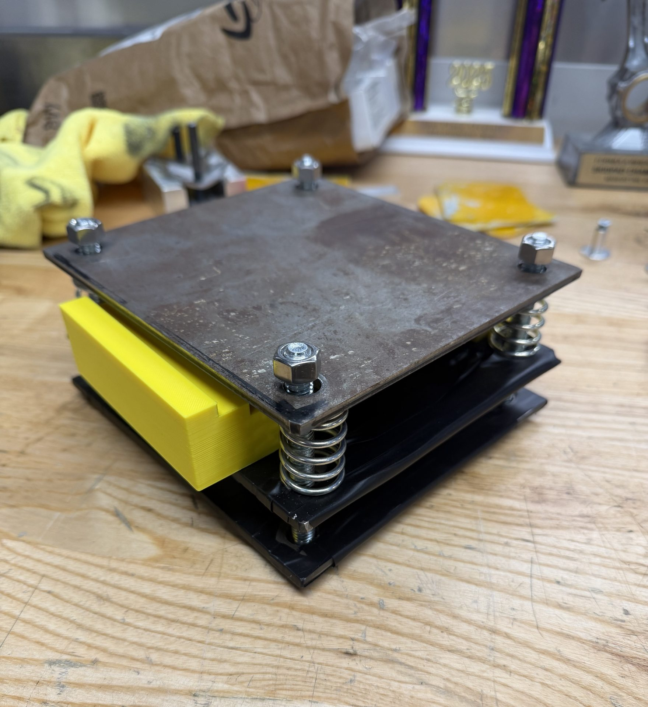
Spring-loaded fixture for adjustable cell face pressure across the 0–8 psi range.
C-Rate: Secondary Effect
C-rate tests via the carbon pile rheostat showed DCIR trending downward with increasing current draw, likely from local temperature increases due to ohmic heating. The effect was real but small, so I didn't incorporate it into the thermal simulations.
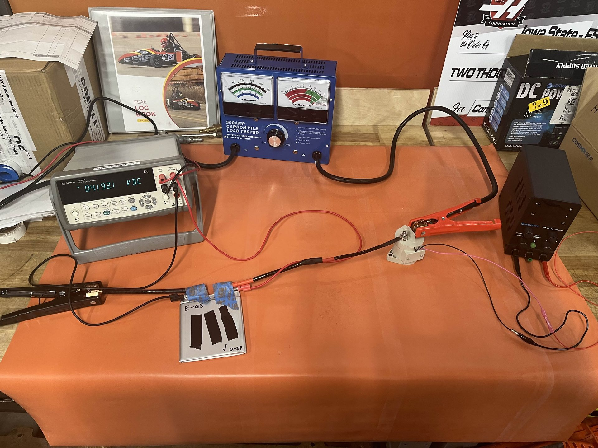
Carbon pile rheostat rig for sweeping C-rate against DCIR.
State-of-Charge: Repeatable and Strong
For SoC testing I ran 10-second discharge pulses to capture the ohmic voltage drop and 1RC transient, followed by 3-minute rests to track 2RC recovery. As SoC drops, Li⁺ concentration in the electrolyte decreases and charge transfer kinetics at the electrode surface become less favorable, both of which increase resistance. The results matched: a clear, repeatable DCIR increase at lower states of charge.
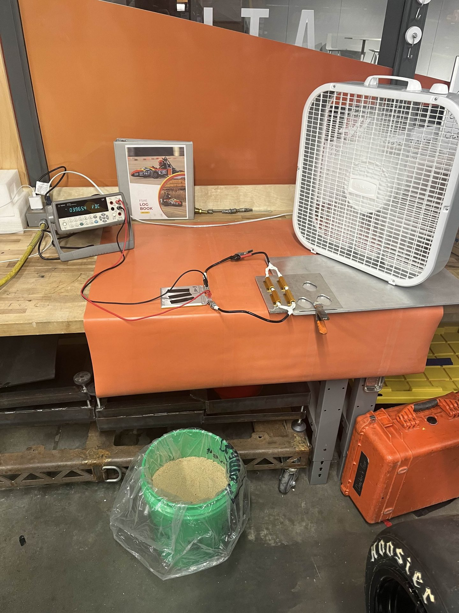
10-second discharge pulse protocol capturing ohmic drop and 1RC/2RC recovery.
Temperature: The One That Mattered
I didn't have access to the university temperature chamber, so I improvised with a foldable heat pad wrapped around isolated cells. Cell temperature was monitored with FLIR thermography and IR spot metering. I ran the same pulse protocol across 25–60°C, and this is where things got interesting.
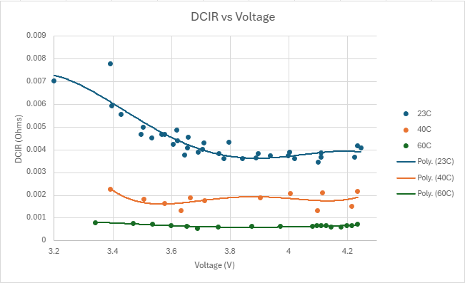
DCIR plotted against SoC across the temperature sweep, captured during the heat-pad test runs.
DCIR Mapping: The Spec Sheet Was Way Off
Temperature and SoC together dominated DCIR variance. When I plotted the full dataset, DCIR dropped as low as 0.7 mΩ at operating temperature, less than half the spec sheet's 1.5 mΩ minimum. The cells were running more efficiently than the datasheet implied.
I built a 3D surface in MATLAB mapping DCIR against temperature and SoC, then fit it to a third-order polynomial for the team's thermal simulation.
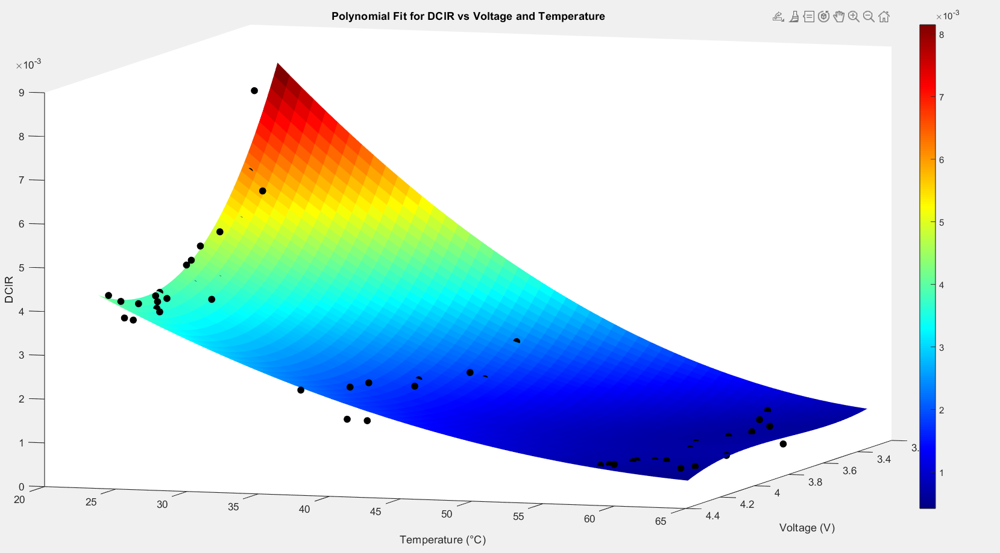
DCIR surface against temperature and SoC: raw dataset (left) and third-order polynomial fit (right).
Running the thermal model with real DCIR data and a 1.5x safety factor from RC recovery analysis, the pack's peak temperature stayed well below 60°C (the rules maximum) for the full endurance duration. The liquid cooling system wasn't just overkill. It was unnecessary.
Redesign
With passive heat mass confirmed sufficient, I stripped the liquid system: base plate, U-shims, thermal pads, pump, and radiator. In their place I added 10 fans: 5 always-on for penthouse electronics cooling, 5 BMS-relayed above the modules as backup for cell cooling. Whether or not the cell fans are active, airflow intakes over the cell tabs and exhausts through the penthouse vents. Simple, lightweight, and the BMS relay gives it a failsafe for anomalies like connection degradation.
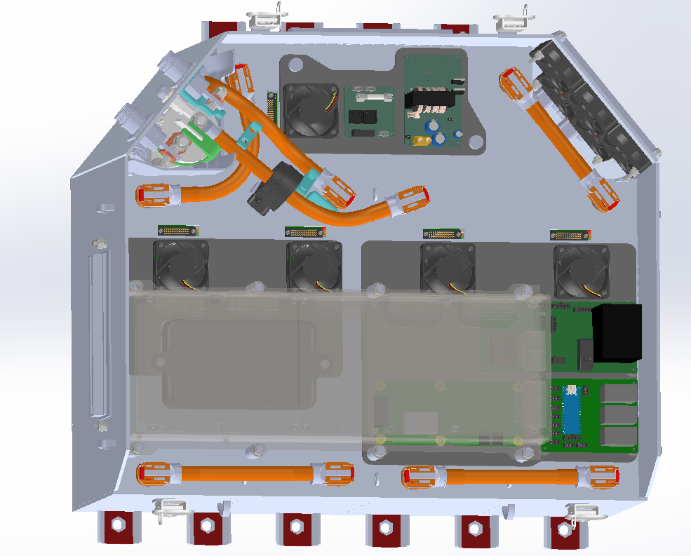
Final cooling architecture: ten BMS-relayed fans draw airflow across the tabs and exhaust through the penthouse vents.
Specific Heat: Freezer Calorimetry
No published specific heat data existed for these cells, so the team was using aluminum as a stand-in. I wanted to validate that before it fed into anything important. With styrofoam, thermocouples, and my freezer, I set up a calorimetry test: first on aluminum blocks to establish a calibration multiplier, then on the cell itself. Results were consistent across runs, averaging 0.954 J/g°C. Not aluminum, but close enough that the simulations weren't wildly off.
Takeaways
The biggest lesson is that spec sheets for cells like these are useless for thermal design. They're written for general consumers, not race applications. Characterizing the cells under real conditions changed the design direction, saved weight, and gave the team a thermal model based on real data instead of guesses. I'd like to revisit this with proper temperature chamber access to fill in the edges of the DCIR map and run higher C-rate tests I couldn't reach with the load bank.
Project Timeline
September 27, 2025
Milestone 1: Test Rig Design
October 4, 2025
Milestone 2: DCIR Characterization
October 18, 2025
Milestone 3: Thermal Model & Redesign
Configured $100 DCIR testing equipment with load bank, carbon pile rheostat, pressure fixture, and current sensing equipment. Established testing protocols for stack pressure, temperature, C-rate, and state-of-charge analysis.
Conducted systematic DCIR tests isolating mechanical (face pressure), electrical (C-rate), and thermal (temperature, SoC) variables. Generated 3D DCIR surface maps showing temperature and SoC as dominant factors. Determined liquid cooling unnecessary for race loads.
Fitted DCIR data to third-order polynomial for thermal simulation. Developed hybrid cooling architecture removing liquid systems in favor of 10 BMS-relayed brushless DC fans. Validated specific heat capacity at 0.954 J/g°C through custom calorimetry testing.
1976 Honda CB750F Restoration
Summer 2025·DiagnosisRebuildFabrication·~5 min read
The 1976 Honda CB750F.
Reviving a 50-year-old SOHC four: carburetors, electrics, timing, and the start of a cafe racer build.
Why This Bike
I came across a cafe racer build by Milezero Racer based on a CB750F Clubsport and immediately wanted one. Beyond the aesthetics, this was a project I needed. I'd learned about carbureted engines in theory but never had my hands on one. Carburetors are dated technology, but the physics behind them are fascinating. There's also something satisfying about reviving a machine that hadn't turned over in years.
There's a practical reason too. Working through a real mechanical system, diagnosing problems, chasing faults, fixing things that fight back, builds intuition you can't get from a textbook. The CB750 has been one of the better teachers I've had.
Initial Assessment
The bike wasn't running when I got it but wasn't a disaster either. Tires were dry rotted, so I built a makeshift center stand from scrap wood and swapped them before anything else.
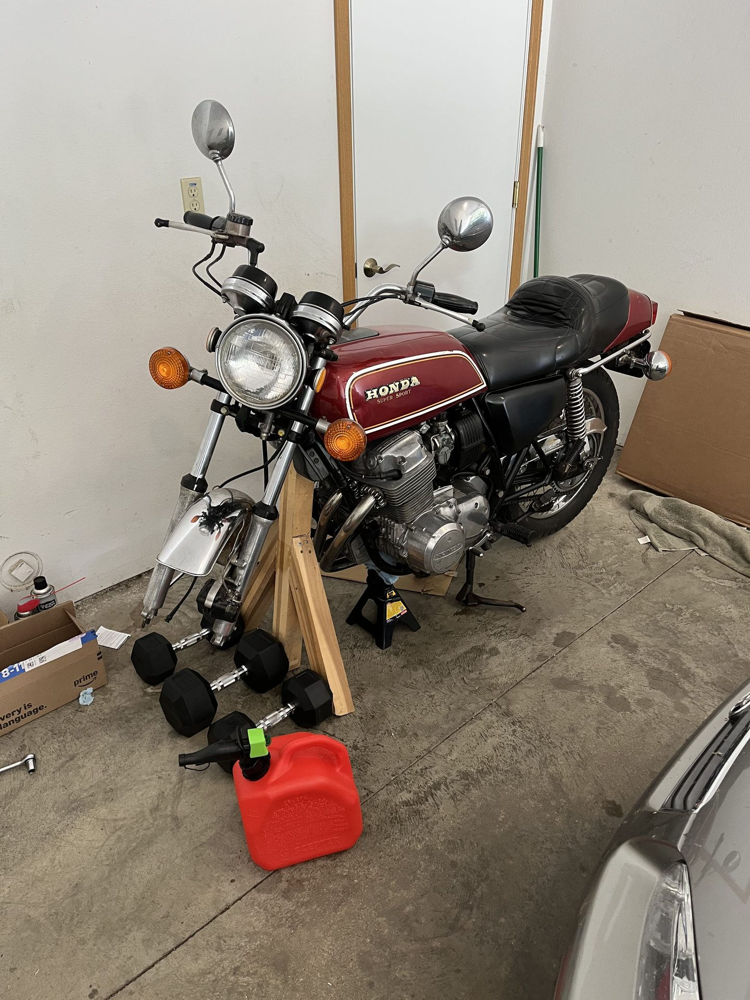
A makeshift center stand built from scrap wood to swap the dry-rotted tires.
Then I ran through the basics: spark, compression, air, fuel.
Compression came in at 130–135 psi across all four cylinders. The SOHC forums put healthy range at 150–180 psi, with 120 being the low end and below 100 needing work. Consistent across cylinders, which is a good sign, but on the low side. The air filter was torn and got replaced. The carbs were the main concern: float pins seized from corrosion, so a simple clean wasn't going to work.
Electrical System
The electrics needed work. Both lights had heavy parasitic draw, the high beams killed power to the whole bike, and the turn signals were dead. The previous owner installed a lithium battery whose BMS couldn't handle the bike's demands, so I replaced it with an AGM while sorting everything else.
Tracing the harness turned up loose and corroded bullet connectors throughout. I cleaned or replaced the bad ones and ran continuity checks to confirm. Spark was weak but the coils tested fine. The coil boots had resistance well above spec at the plug interface, so those and the plugs got replaced.
For lighting I built a custom headlight from a Suzuki GS850 housing fitted with high-output LEDs and swapped the tail light. Before the swap, switching lights on caused nearly half a volt of drop. After, the turn signals worked, draw was negligible, and the high beam issue was gone.
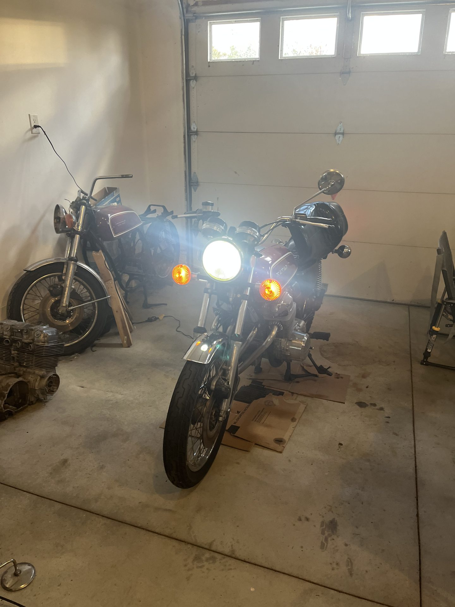
Custom headlight built from a GS850 housing with high-output LEDs (left), and the swapped LED tail light (right).
Carburetor Swap
The original carbs were too corroded to rebuild. I sourced a donor bike and stripped a set of Keihin 7A carbs, roughly equivalent in jetting to the originals. After cleaning, setting float levels, and syncing all four, I installed them.
Keihin 7A carbs pulled from a donor bike, cleaned and synced before install.
They got the bike running but have been an ongoing problem. The carbs run rich, clog regularly, and lose their tune. I've retuned them six times and done a full rebuild with float level reset and jet cleaning four times. Plugs have fouled repeatedly. Sorting the carbs is the top priority.
Timing
With spark and carbs sorted the bike started, but only on three cylinders and would lug to a stop after a few minutes. I ran the static timing procedure from the SOHC forums: 12V test light on the points, engine rotated by hand with TDC/BDC confirmed by the markings and a finger in the plug hole. Timing was retarded on cylinders 2 and 3. After adjusting, all four fired cleanly. I skipped dynamic timing since the bike ran well after the static adjustment. Something to verify down the road.
First Miles and What Still Needs Work
The first 100-mile ride went well enough to call it a success, but the remaining issues were hard to ignore. Fuel economy is poor from the rich carbs, and I have to run the petcock on reserve for adequate flow. The clutch is notchy and needs a rebuild. The front brakes are unhappy. The left caliper has a slow seep that leaves a film on the rotor before each ride. It hasn't saturated the pad yet, which I haven't fully explained.
What's Next
Mechanical reliability first: clutch rebuild, brake overhaul, and sorting the carbs. After that, the cafe build starts. I want to fabricate a custom seat in carbon fiber nylon to cut weight and clean up the tail. The tank is getting a clear coat to preserve the steel and some of the patina. The mirrors vibrate at speed, so I'm planning a lower-profile replacement with better damping.
Project Timeline
July 4, 2025
Milestone 1: Diagnosis
July 19, 2025
Milestone 2: Carb Swap & Electrical Overhaul
September 1, 2025
Milestone 3: First Ride
Full inspection: compression at 130–135 psi, dry rotted tires, seized carb floats, corroded bullet connectors, weak spark from failed coil boots, parasitic draw from headlight and tail light.
Swapped in Keihin 7A carbs from donor bike, rebuilt and synced. Replaced coil boots and plugs. Traced and repaired wiring harness. Built custom headlight from GS850 housing with LEDs. Swapped tail light. Replaced lithium battery with AGM. Set static timing on cylinders 2 and 3.
100-mile ride completed. Bike runs on all four cylinders. Remaining issues: rich-running carbs, front brake seep, clutch feel. Cafe racer modifications planned.
Dyno Cart Testing
April–June 2025·DesignManufactureValidation·~4 min read
The "Porsche Ferrari" dyno cart, reconfigured from its Yamaha R6 origins to carry the Emrax 208 and the tractive system.
Adapting Cyclone Racing's legacy IC dyno cart to validate an Emrax 208 motor and DTI HV550 inverter before the team committed to going electric.
Why This Existed
Cyclone Racing was finishing its last season as an IC team while beginning the transition to electric. The Emrax 208 motor was on hand, but we had no chassis to put it in and no way to run it under load. Before abandoning a program we'd been dominant in, we needed to prove the electric powertrain worked. That meant spinning the motor with the full tractive system outside the car, which meant building somewhere to mount it.
The team had a dyno cart that had been around so long nobody knew when it was built. It had a Porsche sticker and a Ferrari sticker on the side, so we called it the Porsche Ferrari. It was configured for a Yamaha R6 engine, which made it useless as-is.
Reconfiguration
The original cart was built around the R6: IC mounting features, a gas tank, and IC wiring with no provision for GLV power or the HV interlocks needed to keep the tractive system live. The GLV battery cutting out would kill HV power, so that had to be managed carefully.
I designed the reconfiguration to be swappable rather than permanent. IC mounting features were removed and replaced with bolted equivalents so the cart could switch between IC and EV configurations. The GLV wiring was pulled off entirely and moved to a separate cart, making the harness swap simple depending on what you were testing.
Motor Mount
The Emrax 208 is a pancake-style motor with a bolt pattern that didn't match anything on the cart. I kept the mount simple: two lengths of square tube steel spanning the full width to handle motor torque, bolted at both ends, with a third piece at 90 degrees to capture three of the four bracket mounting holes. Nothing exotic, but rigid and functional.
The Water Brake
A water brake is a hydraulic absorption unit. Water enclosed in a housing acts like a pump, using fluid resistance to apply counter-torque against whatever is spinning it. The CR27 team had used one for a full-power test with the R6, so I assumed it would hold up for the electric motor.
In hindsight I should have run hand calculations first. The data sheets had been lost along with most institutional knowledge of the thing, and I'm not confident it could handle the loads the Emrax produces. It was sufficient for what we needed at the time, but future testing will use the 300 kW dynamometer the university has since installed, which gives real load control and accurate torque curves. The Porsche Ferrari has probably earned its retirement.
Testing
The no-load test was the first time the full tractive system ran: battery pack, Orion BMS, and DTI HV550 inverter all running together. The goal was to confirm everything communicated correctly and the BMS behaved as expected before putting real demand on it.
First full tractive-system spin-up: battery pack, Orion BMS, and DTI HV550 inverter running together for the first time.
The loaded test pushed higher power through the system with the water brake applying resistance. It surfaced an issue: the motor would stop randomly after about 30 seconds with no fault codes from the inverter or BMS. We worked through it, but it was a reminder that systems that look clean on paper have a way of surprising you the first time you run them.
The results weren't well documented. Something I'd do differently. What we confirmed was that the tractive system was functional and the team understood how to operate and troubleshoot it. That was the whole point before committing to an EV program.
What's Next
Future powertrain testing will move to the university's dynamometer. Beyond the water brake's load limits, driver testing gives more useful data than anything we can simulate on the cart. The custom hub motors in development will spend time on the dyno before they go near a car, but that's a job for the 300 kW unit, not the Porsche Ferrari.
Project Timeline
April 08, 2025
Milestone 1: Design Completed
April 15, 2025
Milestone 2: Manufacturing Completed
June 17, 2025
Milestone 3: Testing Validated
Completed the design, including CAD models for the dyno cart structure, water brake, mounting solutions, and all powertrain components.
Finished manufacturing the dyno cart.
Validated the dyno cart through the teams first loaded electric powertrain test.
CR29 Accumulator: Manufacture
March 2025·ManufactureValidation·~6 min read
A finished 28s1p tractive battery module with BMS sense wires harnessed.
Building Cyclone Racing's first tractive system from scratch: the aluminum housing, five battery modules, and everything that went wrong along the way.
Specifications
Configuration: 28s1p per module
Cells: COSMX CA95B0D0HD
5 modules total
Context
CR29 was Cyclone Racing's first electric car. The accumulator, the main high-voltage battery pack, had to be built from scratch. Nobody on the team had done this before. This write-up covers the full manufacturing process: the aluminum housing and the five battery modules that go inside it.
What an Accumulator Is
The FSAE rules called the main high-voltage battery pack the accumulator. That terminology shifted to "tractive battery" in the 2026 ruleset, but for CR29 it was the accumulator. It isn't one big battery. It's a housing containing smaller sub-units called modules, wired in series to reach the total pack voltage. Each module is a self-contained group of cells. For CR29, each module holds 28 pouch cells wired in series with one cell per parallel group (28s1p). Five modules make up the full pack.
The Aluminum Housing
The housing is a welded aluminum enclosure that holds all five modules, the BMS, and the high-voltage wiring. The flat panels were water jet cut from aluminum sheet, which gave clean, accurate profiles without introducing heat distortion.
The original design called for the side walls to be bent to shape rather than cut as separate pieces and welded. Bending would have been faster and produced cleaner corners, but the bend tolerances weren't tight enough to be usable. The walls didn't sit where they needed to sit. Rather than redesign around the bending process, the bent sections were cut off and the walls were welded on as flat pieces. Both the exterior panels and the interior partitions.
That created a new problem. The exterior walls are 3.2mm thick and welded fine. The interior partitions are 2.3mm, the rules minimum. Welding a continuous seam into 2.3mm aluminum puts more heat into the part than it can absorb without moving. The walls warped. After welding, the interior cavity was tight enough in places that the modules wouldn't fit. The fix was a mallet, working the distorted spots outward until the modules fit. Functional, but out of spec.
A lot of time went into fitting each panel before tacking so the housing would match CAD. Even then, it wasn't perfect. For CR30, the plan is to add slots to the mating edges so panels self-locate when assembled. That cuts fitment time and removes the need for careful alignment before every tack.
CR29 housing panels fixtured for welding (left), and the container near complete (right). Every panel needed external clamping to hold square before tacking.
Module Assembly
The 28 cells in each module get sorted into four types, A through D, based on tab length and orientation. The type determines where in the stack the cell goes. Getting the order wrong means a tab that doesn't reach its clamping plate, or one that's bent at the wrong angle.
Before touching a cell, the tab clamping plates had to be prepared. These are 3D-printed plates that clamp the cell tabs and bolt them together electrically. The innermost bolt positions are inaccessible once cells are stacked, so the design used press-fit nuts embedded in the plastic. In FDM prints, press-fit doesn't hold reliably, so each nut got bonded in with JB Weld and left to cure. The intent was for them to behave like heat-set inserts, locking the nut so the bolt has something solid to thread into.
With the plates ready, assembly went like this: drop the first D cell into the stack, lay a tab block over the tabs, fold the tabs up onto it, drop in the first A cell, fold its tab, add another tab block with a BMS sense wire ring, bolt through. Then repeat, alternating A and B cells through the stack. The final cell is a C type. After the last cell, main terminals get attached and the whole stack goes into polycarbonate baskets for structural support and isolation.
Total module build time ran about 5 hours a day over three days, roughly 3 hours per module including cell stacking, tab folding, bolting, and BMS sense wire harnessing. That doesn't count 4 hours sanding burrs off the tab blocks before assembly, or the time crimping fuses onto the BMS wires.
Module assembly in progress: cells, tab blocks, and clamping plates layered into the stack.
The first completed CR29 module after cell stacking, tab folding, and BMS sense harnessing.
What Didn't Work
The JB-welded nuts were the biggest problem. Because they weren't square in their pockets, some bolts cross-threaded on the way in. Once a bolt cross-threads into an epoxy-held nut, the nut breaks free. Now there's a loose nut inside a sealed module. Fixing it meant partially disassembling the stack mid-build. The bonded nuts also made disassembly difficult when modules needed to come apart for CR30.
Stack pressure was the second gap. Pouch cells need to be compressed during cycling to prevent swelling and dendrite growth. The module had compression plates, but the cell dimensions in CAD came from the datasheet, not actual measurements. Real cells ran about 0.7mm thinner than spec per cell. Across 28 cells, that's roughly 20mm of lost compression.
The terminal bolts were a safety concern. The pack terminals were accessible from below even with TPU plugs installed. Live conductors there are a problem for inspections and for anyone whose hand ends up near the bottom of a live pack.
Notes for CR30
The full list from this build: add self-jigging slots to the housing panels, redesign the nut pockets with tighter interference fits so they lock mechanically without JB Weld, measure actual cells before finalizing compression plate dimensions, fully enclose the terminal connections, reduce bolt count, and clean up harness routing. The accumulator worked well enough for testing. Building it showed where the next generation needs to be different.
CR29 pack complete, penthouse wiring visible. The harness routing mess in this photo is what CR30's cleanup targeted.
Project Timeline
Early March 2025
Housing Fabrication
March 20, 2025
First Module Assembly
March 30, 2025
All Five Modules Complete
Aluminum panels were water jet cut and welded into the housing enclosure. The planned bending process was abandoned after tolerances proved too loose. Weld distortion in the 2.3mm interior walls required mallet correction before modules could fit. Self-jigging slots flagged as a CR30 improvement.
The first module came together over the course of a full day. Cross-threading from misaligned JB-welded nuts appeared early. Cell gap from real vs. spec dimensions was confirmed at ~0.7mm per cell. Exposed terminal connections were flagged as a safety concern. All issues were documented for CR30 design review.
All five modules were completed with wiring harnesses and polycarbonate baskets installed. The full accumulator was assembled and the pack was ready for subsequent system-level testing.
2 Week Tube Chassis
March–April 2025·ResearchDesignValidation·~4 min read
CR25-C, the tube-frame replacement designed over spring break to carry CR29's existing drivetrain and suspension.
CR29's carbon chassis failed at demolding. Over spring break, five of us designed a replacement tube frame from scratch in two weeks. It never got built, but it was worth doing.
How It Started
CR29 was designed around a carbon monocoque chassis. To speed up manufacturing, we built a welded steel mold instead of the usual fiberglass tooling. Steel is harder to seal, and during cure the vacuum bag lost pressure. Without vacuum, the laminate didn't consolidate. When the chassis was demolded, it was obvious. The surface looked crispy, layers frayed at the edges. Press anywhere and it was soft, crunching because the fibers had no matrix. There was no repairing it. Total loss.
That left us with a competition season, a complete drivetrain and suspension package, and no chassis. Over spring break, five of us decided to salvage it.
The Sprint
No formal assignments. We built a burndown list of everything the chassis needed, put it in front of everyone, and people grabbed tasks. The goal was to divide subsystems so nobody blocked anyone else.
The design wasn't starting from nothing. CR25 was the 25th car and one of the strongest tube frames the program had built. Its geometry was the reference point. The objective for CR25-C was to match CR29's critical dimensions: driver position, overall envelope, and the mounting locations for motor, wings, and suspension pickups. Those were optimized for CR29, and changing them would mean revisiting work already done well. The tube frame was a workaround, not a redesign.
The bare CR25-C tube frame, before any subsystems were mounted.
What I Worked On
I took cooling because it was my original design for CR29. The tube frame changed packaging constraints, not the system, so it made sense to adapt it myself. The firewall went with it. FSAE rules are specific about what has to be sealed and how, and getting it wrong is a tech inspection failure. I'd worked on both the firewall and seat for CR29 as well.
Suspension was the bigger task. A tube frame is heavier than a monocoque, so the spring rates from CR29 wouldn't work. I updated spring selection for the added mass, re-ran the blade simulations to validate geometry, laid out hardpoints, and carried over the A-arms, ARB, and struts from the original design. The goal was to touch as little as possible while making what needed to change correct.
At the end of the design phase, the team submitted an SES (Structural Equivalency Spreadsheet). It's an FSAE document that proves a chassis meets the structural requirements. It's mandatory for competition; no SES approval, no tech sign-off.
The Vote
With the design done and SES submitted, the team had to decide whether to build it. That came down to funding and time. The vote went to the team leads. Two tied votes. The meeting was a war. The decision came down to bringing CR28, the last IC car, to competition instead. Optimizing a known car was a safer bet than manufacturing and debugging a new chassis in the time remaining.
CR28 went to Michigan and finished 5th. That's a hard result to argue with.
Looking Back
The two weeks were worth it. Not because the chassis got built, but because of what working that way felt like. A small group, a clear deadline, a list of tasks, no bureaucracy. Everyone just worked. It's the closest thing to a startup environment I've been in, and it confirmed that's the kind of team I want to be part of. The lesson that came with it is harder: you can do everything right and still lose the vote. A good solution to a bad situation doesn't guarantee it gets used. Sometimes the answer is correct and it still doesn't happen.
Project Timeline
March 17, 2025
Design Begins
March 31, 2025
SES Submitted
April 7, 2025
Project Terminated
Using CR25 as the geometric reference and CR29's critical mounting locations as constraints, CR25-C was modeled over spring break. Subsystems were divided across the group: suspension, cooling, firewall, seat, and chassis structure, with each person working in parallel to avoid bottlenecks.
The Structural Equivalency Spreadsheet was completed and submitted, formally demonstrating that CR25-C met FSAE's structural requirements. SES approval is required before a car can pass technical inspection at competition.
After two tied votes, the team leads decided to bring CR28 to competition rather than manufacture CR25-C. CR28 finished 5th at Michigan. The team's final IC season.
Maximus Anderson
mnra@iastate.edu
I'm a mechanical engineering student who excels in designing and manufacturing battery packs and electric race cars... that hopefully won't blow up.